RAIL 2024Tafsiri ya mashine
Kufanya Fonetiki katika Bonde la Ufa: Mifumo ya Sauti ya Kimaasai, Kiiraqw na Kihadza
Tafsiri ya mashine, haijakaguliwa na binadamu. Makala asili ndiyo toleo la rejeo; sentensi zilizopigiwa mstari ni zile ambazo ukaguzi wa kiotomatiki haukuwa na uhakika nazo.
Proceedings of the Fifth Workshop on Resources for African Indigenous Languages @ LREC-COLING 2024.
Tafsiri ya Ernst van Gassen (Arktos AI Lab), yenye leseni CC BY-NC 4.0 kama makala asili. Matumizi tena yanaruhusiwa kwa kutaja mwandishi, kwa matumizi yasiyo ya kibiashara tu. Waandishi asili hawajakagua wala kuidhinisha tafsiri hii.
Maandishi matupu ya kutumia tena, pamoja na leseni yake: Kiswahili · LESENI
Taasisi
Ghio1 A., Demolin2 D., Karani3 M., Meynadier1 Y.
(1) Aix Marseille Univ, CNRS, LPL, Aix-en-Provence, France
(2) LPP (UMR7018, CNRS/Sorbonne Nouvelle), Paris, France
(3) Centre for Communication Studies, College of Humanities, Univ of Dar es Salaam, Tanzania
Anwani za barua pepe zimeondolewa kwa sababu za faragha. Zinapatikana katika PDF asilia.
Muhtasari
Makala hii inajadili mchango wa mbinu za kimajaribio katika kurekodi data za kifonetiki uwandani. Sehemu ndogo tu ya mifumo ya fonolojia ya lugha za Afrika imeelezwa kwa usahihi. Ndiyo maana ni muhimu kukusanya data za kimajaribio kwa namna ya rekodi za sauti, video na kifiziolojia. Hii inaruhusu maswali ya utafiti kama vile mifumo ya utofauti kushughulikiwa. Mbinu za kichanganuzi zinaonyesha jinsi ya kufasiri data kutoka kwa kanuni za kifizikia na kuziunganisha katika miundo mwafaka. Swali la mgusano wa kiisimu kati ya familia tofauti za lugha pia linashughulikiwa. Ili kufikia malengo haya ya jumla, tunawasilisha jinsi tunavyobuni korasi, na njia tofauti za kurekodi data pamoja na mazingatio muhimu ya kiufundi wakati wa kazi ya uwandani. Hatimaye, tunazingatia lugha 3 zinazozungumzwa katika Ukanda wa Ufa Mkubwa wa Afrika, ambao unajumuisha maeneo kadhaa ya lugha yanayomilikiwa na familia kuu nne za lugha za bara hili. (1) Hadza ni lugha ya mibofyo yenye mfumo changamano sana wa konsonanti. (2) Iraqw ni lugha ya Kikushi yenye konsonanti za kutoa hewa kwa nguvu. (3) Maasai ni lugha ya Kiniloti yenye konsonanti za kuingiza hewa na seti iliyobuniwa kwa kina sana ya vihisishi, ideofoni na miito ya wanyama inayojumuisha sauti ambazo hazijaelezewa katika Alfabeti ya Kimataifa ya Fonetiki.
Maneno Muhimu
fonetiki ya majaribio, kazi ya uwandani, hadza, iraqw, maasai
1. Uhitaji wa data za uchunguzi
Zaidi ya lugha 2000 zinazungumzwa katika bara la Afrika (Güldemann, 2018). Ni sehemu ndogo tu kati yao ambayo imeelezewa katika muundo wa sarufi. Miongoni mwa zile ambazo zimeelezewa, sehemu ya sarufi inayohusu fonetiki na fonolojia mara nyingi ni chini ya 10% ya maudhui ya sarufi nzima (Maddieson, 2002). Aidha, Maddieson alionyesha kwamba "wakati mifumo ya kisintaksia inaandikwa kwa sentensi za mifano, mara nyingi kutoka kwa mazungumzo asilia au maandiko, ukweli wa kifonetiki ni nadra au kamwe kuandikwa kwa uwasilishaji wa ushahidi thabiti". Maelezo ya kifonolojia ambayo tunaweza kuyapata wakati mwingine si sahihi na mara nyingi kuna utata wa alama zinazotumika. Ili kuonyesha ukosefu wa data, tunaweza kulinganisha ramani ya lugha zilizoelezewa katika hifadhidata ya PHOIBLE (Moran, S., & McCloy, 2019) ambayo ina lugha 2186 tofauti na ramani halisi ya lugha zinazozungumzwa nchini Tanzania (Kielelezo 1). Ingawa hifadhidata hii ndiyo pana zaidi katika uwanja huu, ni lugha 30 pekee zinazopendekezwa katika PHOIBLE kati ya zile 125 zinazozungumzwa nchini Tanzania. Si tu kwamba data imepunguzwa, bali pia ina makosa madogo na hata makosa makubwa. Kwa mfano, ukichagua Lugha ya Iraqw (Glottocode: iraq1241), orodha ya sauti za Iraqw iliyopendekezwa na Stanford Phonology Archive (SPA) au na UCLA Phonological Segment Inventory Database (UPSID) inajumuisha konsonanti za kuvuta hewa ndani katika lugha hii kama [ɓ] na [ɗ], jambo ambalo si kweli kwa kuzingatia kazi ya kina ya Mous (1993). Aidha, bado katika Lugha ya Iraqw, konsonanti /q/ mara nyingi inaelezewa kama kipasuko kisicho na sauti cha uvular lakini utamkaji wa fonimu hii unaonekana si wa mapafu bali kwa utaratibu wa kutoa hewa kwa nguvu, jambo ambalo lingestahili uwakilishi wa kifonolojia /q'/. Kwa njia hiyo hiyo, ukichagua lugha ya Kimaasai (Glottocode: masa1300), orodha ya sauti za Kimaasai iliyopendekezwa na Stanford Phonology Archive (SPA) au na UCLA Phonological Segment Inventory Database (UPSID) inajumuisha trili ya alveolari isiyo na sauti [r̥ ] ambayo sifa yake ya kutokuwa na sauti inapingwa (Karani et al., 2023).
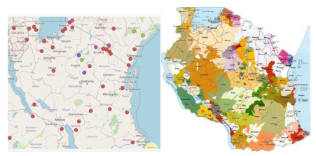
Kielelezo 1: Lugha zinazozungumzwa Tanzania. Kushoto: Orodha katika hifadhidata ya PHOIBLE (Moran, S., & McCloy, 2019). Kulia: Atlasi ya lugha za Tanzania,
(2009)
Kwa sababu hizi zote, ni muhimu kukusanya data za uchunguzi kwa namna ya rekodi za sauti, video na za kifiziolojia. Hili ndilo lengo la miradi, "SYSORI" (Mifumo ya Sauti ya lugha za Bonde la Ufa) na upanuzi wake "COSYSORI", inayofadhiliwa na CNRS (tazama §.6 shukrani). Lengo la makala haya ni kutoa baadhi ya maelezo ya awali.
2. Vipengele vya mbinu
2.1 Isimu ya uwandani au kazi ya uwandani nyumbani
Kuna njia kadhaa za kufanya taaluma ya lugha. Iwapo sarufi ya lugha, na hasa mfumo wa kifonolojia, imeelezwa kwa usahihi, inawezekana kutumia mkabala wa kiikolojia kama inavyopendekezwa na Gasquet (2015). Tunapofanya kazi kwenye lugha zenye nyaraka chache, haiwezekani kwetu kuelezea matukio ya kiisimu papo hapo. Tunatumia mkabala unaotegemea korasi. Tunawauliza wazungumzaji kutoka jamii iliyobainishwa maneno na sentensi (ukusanyaji wa data za lugha), ikiruhusu maelezo ya sifa za kifonetiki za lugha inayochunguzwa. Isimu ya uwandani kwa hakika inahitaji maandalizi mahususi, ujuzi wa maeneo, historia, jiografia, kuzoea utamaduni wa kienyeji, matumizi ya wakalimani, na mawasiliano na watu. Tukirejelea maelezo ya Crowley (2007), tunafanya isimu ya "miguu michafu". Haihusiani hata kidogo na kurekodi kwa wasemaji wenyeji ndani ya vyuo vikuu, kinachofafanuliwa na (Crowley, 2007) kuwa "kazi ya nyumbani". Uwandani, tunapaswa kukabiliana na hali halisi za kiisimujamii (madaraja ya kijamii, mivutano, ubaguzi, tofauti kulingana na umri, jinsia, n.k.). Lazima pia tutafute suluhu zinazohusiana na changamoto za kiutendaji, za kiusafirishaji na za kiufundi. Tunaweza kutaja, kwa mfano, wakati mwingine ni vigumu sana kufikia vijiji vilivyojitenga mashambani. Pia tunafikiria kuhusu kukosekana kwa umeme au usambazaji wa umeme wa vipindi, hivyo kuhitaji matumizi ya betri na paneli za jua. Tunaweza kutaja ugumu wa kupata mazingira yenye kelele ndogo kukiwa na uwepo wa karibu wa watoto, mifugo, n.k. Mazoezi kama hayo yanahitaji uzoefu mzuri wa uwandani na maandalizi ya kutosha kabla ya kuanza misheni za kazi ya uwandani.
2.2 Vipengele vya kimaadili
Katika kazi yetu ya uwandani, mkalimani, katika kisa chetu mzungumzaji asilia ambaye ni mwanaisimu aliyefunzwa, anawaeleza kwa uwazi wajitoleaji lengo la mradi wa utafiti ni nini. Washiriki wanafahamishwa kuhusu namna utafiti utakavyofanywa pamoja na haki zao katika mradi ikiwa ni pamoja na uhuru wa kujiondoa wenyewe kutoka kwenye mradi bila kutoa sababu za kufanya hivyo. Kwa kuwa washiriki wetu huwa hawajui kusoma na/au kuandika, taarifa hii na makubaliano ya mshiriki hurekodiwa kwa sauti au video. Rekodi za idhini huwekwa katika eneo maalum la kuhifadhi linaloshirikiwa na wanachama wa timu ya mradi kwa sababu ni data isiyofichwa utambulisho. Takwimu zote za kisayansi baadaye hufichwa kwa kutumia nambari. Mtafiti wa ndani pekee anahifadhi taarifa binafsi zinazohusu wasemaji ili kuwasiliana nao tena katika siku zijazo ikiwa inahitajika kwa utafiti zaidi wa uwanja. Ni taarifa za jumla zisizotambulisha utambulisho pekee (umri, jinsia, lugha wanazozungumza, na kiwango cha elimu) zinazopatikana kama data ya kimbinu. Ili kufidia muda uliotumika, washiriki wote hupokea posho ndogo ya fedha taslimu, kama wanavyopokea watu wanaoratibu wazungumzaji walengwa.
2.3 Je, tunabuni vipi mkusanyiko wa maandishi?
Kwetu sisi, mkusanyiko mkuu wa maandishi umeelekezwa kwenye maelezo ya kifonetiki. Ili kupata data muhimu na inayoweza kutumika, mbinu yetu ni kuunda korasi maalum ili kujibu swali fulani. Mara nyingi, ni orodha ya maneno ambayo inajumuisha fonimu ambazo tunadhani zina sifa za kifonetiki zinazochunguzwa. Kwa mfano, ili kuangalia tofauti kati ya konsonanti za kawaida dhidi ya zilizolabiwa katika Kiiraqw, tulipendekeza orodha ya maneno yenye konsonanti za kawaida (konki, dakaát, anága kií/, daktani…) dhidi ya vilivyolabiwa (lakwanti, múk tlakw, án aga kwandeékw, tatlkwa…). Ili kuchunguza konsonanti zisizo za mapafu, tunachagua maneno yenye konsonanti za kutoa hewa kwa nguvu katika Kiiraqw au konsonanti za kuvuta hewa ndani katika Kimaasai. Katika aina hii ya utafiti, ni muhimu kulinganisha vitengo hivi na vile vya mapafu ili kuangalia tabia ya kawaida ya zisizo za mapafu ukilinganishwa na za mapafu. Katika hali zote, orodha zinapaswa kuundwa vizuri na kusawazishwa kwa idadi ya matukio (kiasi sawa cha data kwa kila kikundi ikiwa tunachunguza tofauti). Ikiwezekana, fonimu lengwa inapaswa kuwekwa katika nafasi ya mwanzo, katikati au mwisho. Mazingira ya kushoto na kulia ya usemi lengwa yanapaswa kudhibitiwa. Inaweza kubadilika ikiwa tunazingatia kwamba muktadha unaweza kuathiri utamkaji wa fonimu lengwa. Njia ya kukusanya korasi inaweza kubadilika, kutegemea uwezo wa wazungumzaji. Kusoma orodha ni njia rahisi zaidi lakini inamaanisha kwamba maneno yaliyochaguliwa yanapaswa kuandikwa bila utata na juu ya yote, washiriki wanapaswa kuwa na uwezo wa kusoma kwa ufasaha. Hii iko mbali sana na kuwa hivyo katika uwanja. Njia mbadala ni kufanya mazoezi ya kurudia: mzungumzaji rejea anatamka lengwa na mshiriki analirudia. Tunaweza pia kuimarisha ukusanyaji wa data kutoka kwa mzungumzaji kwa pendekezo lililotafsiriwa katika lugha nyingine anayoimudu mshiriki. Kwa mfano, nchini Tanzania ambako watu wengi wanazungumza Kiswahili, tungeanza kwa neno la Kiswahili na kisha neno katika lugha inayochunguzwa. Kiasi cha data lazima kiwe kikubwa vya kutosha kupata matokeo muhimu kitakwimu na juu ya yote kuwa na uhalali wa kujumlisha matokeo. Ni muhimu pia kurekodi angalau wazungumzaji 10 (wanaume 5 na wanawake 5) ili kusawazisha mshiriki yeyote asiye wa kawaida. Inaweza kuwa muhimu kuchanganya pia vijana, watu wa makamo na wazee lakini mara nyingi, haiwezekani kutimiza masharti yote bora uwanjani kwani kila eneo la utafiti lina mipangilio na mahitaji yake ya kipekee kutokana na jiografia, vipengele vya kijamii na kisiasa na kiutamaduni. Wakati wa kurekodi data, ni bora pia ikiwa wazungumzaji wanarudia usemi au korasi mara kadhaa ili kuona kama utamkaji wa kifonetiki ni thabiti au la.
Utafiti wa vipengele vya prosodia unahitaji aina nyingine ya kipengele. Ikiwa lugha inayofanyiwa utafiti ina toni ambapo mabadiliko ya toni yanaweza kubadilisha maana, inawezekana kufanya kazi na jozi ndogo zilizotengwa: kwa mfano katika Kimaasai, áàdàmú ('atakumbuka mimi') dhidi ya áádámú ('nakukumbuka wewe'). Hii inaweza kuwa hatua ya kwanza kuchunguza mfumo wa toni wa lugha. Lakini kwa uchambuzi wa kina wa prosodia, ni bora kuchunguza mifuatano mirefu zaidi; inaweza kuwa sentensi, maandishi au usemi wa kawaida. Sehemu muhimu ya ukusanyaji wa data pia ni kurekodi mazungumzo ya hiari. Ni muhimu kukusanya hadithi na si tu data maalum iliyolengwa. Maudhui yanaweza kuwa kipengele muhimu cha urithi na uchambuzi zaidi wa data ili kujibu. Katika hali hii, tunajaribu kurekodi historia simulizi kwa kutumia kamera ya video. Muundo wa kiufundi unaelezwa zaidi katika sehemu zinazofuata.
2.4 Je, tunarekodi vipi korasi?
Sasa inawezekana kutumia programu tumizi, ambazo zinaweza kusaidia katika kurekodi data. Kwa mfano, LIG-Aikuma ni programu tumizi ya simu ya mkononi kwa ajili ya ukusanyaji wa data za usemi na uhifadhi wa lugha (Blachon et al., 2016). Uwezo mmoja mahususi ni hali ya "respeaking" ambapo opereta anaweza kurekodi kwanza mzungumzaji rejea. Baada ya hatua fupi ya uchakataji, mfanyajaribio anaweza kuchezesha rejea hii kwa wazungumzaji wengine. Njia hii inaweza kuepuka urudiaji unaochosha kwa mzungumzaji asilia wa rejeleo. Haichukui nafasi ya uwepo halisi wa mkalimani au mzungumzaji asilia lakini inaweza kuturuhusu kurekodi data mpya bila uwepo halisi wa mrejeleaji ikiwa hatuwezi kufanya vinginevyo. Programu hii ina faida kwa kuwa inaweza kubebeka na inaweza kufanya kazi kwenye simu ya mkononi. Kwa bahati mbaya, haifanyi kazi kwenye kituo chenye kisasa zaidi kidogo kilicho na kompyuta ya mkononi, kadi ya sauti na maikrofoni nzuri. Kwa hakika, ili kupata data nzuri ya sauti, tunapendelea kutumia maikrofoni nzuri za kielektroniki zilizounganishwa kwenye ubao wa sauti wa nje. Kwa korasi fulani maalum, tunatumia pia vifaa maalumu vinavyoturuhusu kurekodi data za kifiziolojia. Tutaelezea hili zaidi.
2.5 Ufafanuzi na ugawaji
Kufafanua mkusanyiko kunajumuisha kuongeza taarifa muhimu kwa matumizi yake. Hii inajumuisha kuonyesha kwa tahajia maudhui ya data simulizi lakini pia na zaidi ya yote (katika fonetiki) kutambua kwa usahihi mipaka ya kiisimu (ugawaji). Wakati korasi inakusanywa kutoka kwa mzungumzaji kama tunavyofanya, unukuzi ni rahisi ikiwa mzungumzaji anatamka kwa usahihi orodha ya vipengele. Lakini ni nadra kuwa kamili na tunakabiliwa na kusitasita, makosa, marekebisho binafsi… Hatua ya pili ni ugawaji wa kifonetiki ambapo tunahitaji kuweka maudhui na mipaka ya matini iliyozungumzwa. Mchakato huu unatumia muda mwingi kwa sababu, kwa lugha zisizo na nyaraka, ni mchakato wa mikono pekee unaowezekana. Tunajua kwamba baadhi ya miradi inapendekeza baadhi ya zana za kuendesha kiotomatiki mchakato huu. Tunafikiria kwa mfano mradi wa BULB ambao unalenga kusaidia uwekaji nyaraka wa lugha zisizoandikwa kwa msaada wa usindikaji kiotomatiki wa usemi na lugha, hasa utambuzi wa usemi wa kiotomatiki (Adda et al., 2016). Pia tunafahamu mradi wa CLD2025 (https://anr.fr/Project-ANR-19-CE38-0015) ambao lengo lake ni kuwezesha kazi ya kuweka nyaraka lugha zilizo hatarini kwa kutumia uwezo wa mbinu za kikompyuta. Lakini kwa sasa, matumizi ya teknolojia hizi bado hayawezekani kutokana na ukosefu wa data na ujuzi wa lugha zinazochunguzwa.
2.6 Kushiriki data
Ili kuhifadhi data zilizokusanywa uwandani, tulijiuliza swali la kushiriki data kwenye wingu. Nchini Ufaransa, Mkusanyiko wa Pangloss ni maktaba ya kidijitali ambayo lengo lake ni kuhifadhi na kuwezesha upatikanaji wa rekodi za sauti katika lugha zilizo hatarini kutoweka duniani (Boyd et al., 2014). Jukwaa hili ni kumbukumbu ya mwisho inayowezekana ya data tunazokusanya. Kwa sasa, tunahitaji hasa jukwaa la kazi ya ushirika ili kubadilishana data asilia, data iliyoboreshwa, matokeo au marejeleo yanayohusiana na kazi yetu uwanjani kati ya washirika wa Ulaya na Afrika. Chaguo letu kwa muda ni jukwaa la RESANA linaloendeshwa na serikali ya Ufaransa ambalo linawaruhusu washirika kutekeleza shughuli zilizotajwa hapo juu kwa njia ya mtandao.
3. Mazingatio ya kiufundi
Ili kukusanya data zetu, tuna miundo tofauti ya kiufundi kulingana na madhumuni.
3.1 Muundo rahisi wa sauti
Inavutia sana kurekodi wazungumzaji kwa simu ya mkononi. Huu ndio mkakati uliotumiwa na mradi wa BULB (Adda et al., 2016) kwa kutumia programu ya LIG-Aikuma (Blachon et al., 2016). Njia hii ni nzuri kwa kuandika lugha. Hata hivyo, katika uchanganuzi sahihi wa kifonetiki, tunahitaji data zilizodhibitiwa zaidi.
Ufungaji wetu mdogo wa kurekodi unajumuisha maikrofoni iliyounganishwa kwenye kadi ya sauti, ambayo imeunganishwa kwenye kompyuta ya mpakato. Tuna aina 2 za maikrofoni: maikrofoni ya kondensa ya kitaalamu inayovaliwa kichwani (AKG C520) au maikrofoni iliyo kwenye stendi (AKG C1000S). Faida ya maikrofoni inayovaliwa kichwani ni kwamba inalenga usemi wa mzungumzaji na kwa hiyo inapunguza kwa kiasi kikubwa kelele za mazingira. Pia inadumisha umbali usiobadilika ambao unaweza kuruhusu vipimo vya mabadiliko katika ukubwa wa usemi. Upungufu wa kifaa hiki ni kwamba lazima kiambatishwe kichwani au masikioni mwa mzungumzaji, jambo linalohitaji kugusa uso au kusogeza nywele, ambalo wakati mwingine ni gumu. Aidha, aina hii ya maikrofoni yenye kinga duni inaweza kuathiriwa na muingiliano wa sumakuumeme unaosababisha kelele za umeme zisizotakikana. Hii si hali kwa maikrofoni ya stendi, kwa mfano, AKG C 1000 S ambapo kifuko chake cha kapsuli kilichopakwa dhahabu kwa unyunyiziaji hufanya maikrofoni kuwa imara sana dhidi ya unyevu au hali mbaya. Msimamo wa mikrofoni ni muhimu. Ili kuepuka kelele za "pop", zinazotokea kwenye konsonanti za mlipuko au za mkwaruzo, ni vyema kuhamisha maikrofoni mbali na mhimili wa mzungumzaji na kuielekeza kuelekea mdomoni, ambao unaunda pembe ya takriban 45°.
Maikrofoni tunazotumia ni za aina ya kondensa. Zote zinahitaji nguvu ya fantomu kwa sababu ya teknolojia za kondensa. Hii ni sababu ya kwanza ya kutumia kadi ya sauti inayowasha maikrofoni moja kwa moja kupitia kebo. Sababu ya pili ya kutumia kadi ya sauti ya nje ni kwamba uwiano wa ishara-kwa-kelele ni bora kuliko kurekodi moja kwa moja kwa kutumia kompyuta ndogo. Miundo ya kadi za sauti hubadilika haraka lakini tunaweza kutoa miundo inayotumika kwa sasa: Focusrite Scarlet 2i2, Solid Static Logic SSL2, RME Fireface UCX.
Inawezekana pia kutumia kinasa sauti cha kubebeka cha wav/mp3, kwa mfano kifaa maarufu cha Zoom H4n. Tunaweza kutumia kifaa hiki katika hali ya kujitegemea kwa sababu kinajumuisha maikrofoni, vikuza sauti, kigeuzi dijiti na hifadhi. Inawezekana pia kuunganisha maikrofoni za nje kama zile tulizoelezea hapo juu. Kifaa hiki kinaweza kuwasha maikrofoni za kondensa. Upungufu wa kifaa hiki ni kwamba si rahisi kudhibiti kiwango cha kurekodi, hasa ikiwa kifaa kimewekwa karibu na mzungumzaji na mbali na mwendeshaji. Mpangilio usio sahihi wa kiwango utagunduliwa tu mwishoni mwa rekodi, jambo ambalo linasikitisha sana. Upungufu wa pili ni kwamba faili zilizorekodiwa zinapewa majina kiotomatiki kwenye hifadhi ya ndani na wakati mwingine ni vigumu kurejesha nani na nini kilirekodiwa kwenye lebo katika muundo ufuatao: File0035, File0078 n.k.
3.2 Muundo wa Upigaji Picha za Video
Kama tulivyotaja katika § 2.3, ni muhimu pia kurekodi watu wakisimulia hadithi. Rekodi hizi ni data tajiri kuhusu maadili ya urithi. Katika kesi hii, rekodi ya video inapendekezwa kama wimbo rahisi wa sauti.
Njia rahisi ya kwanza ni kunasa picha kwa simu ya mkononi au kwa kamera ya video ambapo sauti inarekodiwa kwa maikrofoni iliyounganishwa. Tatizo la hilo ni kwamba mara nyingi, kamera iko mbali na wasemaji, sauti si sahihi, na kiwango cha kelele ni kikubwa, hasa ikiwa tukio linarekodiwa nje.
Ili kupata data nzuri ya sauti, tunatumia mpangilio wenye maikrofoni 2 za nje. Ile kuu ni Sennheiser MKH 416-P48, maikrofoni ya bomba la kuingilia ya shotgun iliyoundwa kwa ajili ya filamu, redio, na televisheni, hasa kwa matumizi ya nje. Maikrofoni hii ina uelekezi bora na usikivu mzuri (25 mV/Pa). Ili kupunguza kelele za nje, tunaiwekea kinga ya upepo ngumu MZW60-1 na tunaongeza juu yake kifuniko cha upepo MZH60-1. Maikrofoni hii imewekwa kwenye stendi na opereta anaweza kuielekeza kwa mkono ili kulenga kwa usahihi zaidi msemaji wakati wa mahojiano. Maikrofoni ya pili (AKG C1000S) inaweza kuunganishwa kama chanzo kingine cha sauti. Kwa ujumla tuliweka transducer hii karibu na mhoji (Kielelezo 2). Maikrofoni hizi mbili za kondensa zimeunganishwa kwenye kinasa sauti cha Zoom H4n ambacho (1) hutoa nguvu kwa maikrofoni, (2) hurekebisha kiwango cha kurekodi, (3) hurekodi nyimbo za sauti kwa kujitegemea, na (4) hutoa ishara nzuri za sauti kwa kamera ya video. Kwa hakika, tunaunganisha pato la Zoom H4n kwenye ingizo la sauti la nje la kamera ya video. Ni muhimu kudhibiti hatimaye ubora wa sauti kwa kutumia kipaza sauti cha masikioni kilichounganishwa kwenye kamera ya video. Hivyo, mtumiaji anaweza kuelekeza mikrofoni ya shotgun na kurekebisha viwango vya urekodi. Mwishoni, tunaweza kupata filamu ambapo wimbo mzuri wa sauti umesawazishwa moja kwa moja na picha bila uchakataji muhimu wa baadae. Nakala ya nyimbo za sauti pia inapatikana kwenye kinasa sauti cha Zoom H4n.
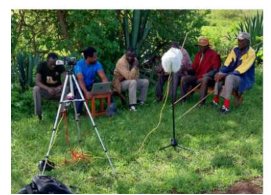
Kielelezo 2: Usakinishaji wa video kwa ajili ya kunakili lugha (Karatu-Mbulumbulu-Lositete, Tanzania, Wazungumzaji wa Kimaasai, 2023)
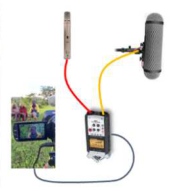
3.3 Data za kifiziolojia
Kipengele cha asili zaidi cha mradi wetu ni kurekodi data za kifiziolojia zilizosawazishwa na ishara za usemi. Data hizi ni muhimu kuelewa jinsi sauti za usemi zinavyotolewa na ni ishara au vipengele vipi bora vinavyohitajika kuelezea sauti hizi (Demolin, 2011). Kipengele cha pili muhimu ni ukadiriaji wa data ambao unawaruhusu watafiti kushughulikia suala la msingi la utofauti wa matukio yanayochunguzwa. Katika kesi ya data za kifiziolojia, tunaweza kufikia mizizi ya utofauti, na si tu utofauti wa juu wa sauti ya usemi. Matumizi ya data za kifiziolojia wakati mwingine ni muhimu kuelezea kwa usahihi sauti za usemi. Kwa mfano, uchunguzi wa sifa za fonatori unawezeshwa na matumizi ya elektroglotografia, ambayo inaruhusu uchunguzi wa kuchagua na wa moja kwa moja, tofauti na uchunguzi wa ishara ya usemi, ambayo ni matokeo ya mikunjo changamano sana ya fonatori na ya kutamkia (Kielelezo 3). Vivyo hivyo, uchunguzi wa akustika wa unazali daima ni changamoto wakati utaratibu wa kifiziolojia wa kufunguka/kufungwa kwa velamu unabaki kuwa operesheni rahisi kiasi ikiwa tuna njia ya kuuangalia. Kupima mtiririko wa hewa puani kunaweza kuwa suluhisho linalofaa vizuri kwa hilo (Kielelezo 4). Hatimaye, namna ya kutamka baadhi ya konsonanti vizuizi kama vipasuko (egressive) au vimilipu vya ndani (ingressive) si rahisi sana kutambua katika ishara ya usemi. Kipimo cha mtiririko wa hewa wa mdomo au shinikizo la ndani ya mdomo wakati wa utoaji wa usemi kinaweza kutoa data ya kiasi kuhusu jambo hili (Kielelezo 5). Shinikizo la ndani ya mdomo katika usemi ni kigezo muhimu cha kifiziolojia kwa sababu linaangazia baadhi ya taratibu tata.
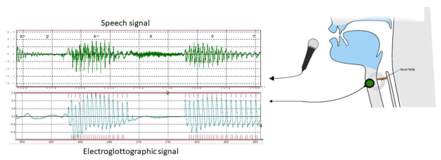
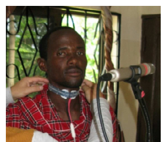
Kielelezo 3: Uchunguzi teule wa taratibu za fonatori kupitia elektroglotografia (Mto Wa Mbu, Tanzania, Mzungumzaji wa Kimaasai, 2023)
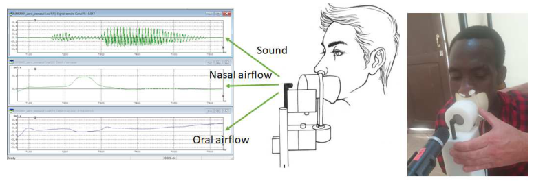
Kielelezo 4: Kupima mtiririko wa hewa wa puani kwa uchunguzi teule wa taratibu za unazali. Ishara ya usemi, mtiririko wa hewa wa puani na mtiririko wa hewa wa mdomo kwa neno la Kimaasai "Embaoi" ('mbao') (Mto Wa Mbu, Tanzania, Mzungumzaji wa Kimaasai, 2023)
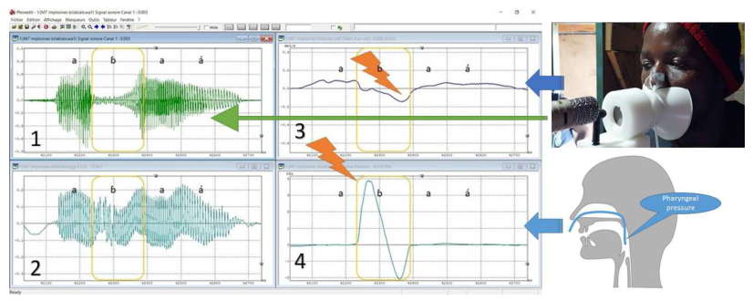
Kielelezo 5: Data ya vigezo vingi kwa uchunguzi teule wa konsonanti za kuvuta hewa ndani na mzungumzaji wa Kimaasai akitamka neno "aɓaá" ("kupasuka"). Ishara ya usemi (1), EGG (2), mtiririko wa hewa wa mdomo (3), shinikizo la koromeo (4) (Arusha, Tanzania, Mzungumzaji wa Kimaasai, 2022-2023)
Wakati wa utamkaji wa konsonanti ya kuvuta hewa ndani /ɓ/, tunaweza kuona kwenye mkunjo n°3 kusimama kwa utoaji wa hewa kupitia mdomo. Huu ndio utaratibu wa uzibaji. Shinikizo katika kaviti ya mdomo huongezeka (mkunjo n°4) kwa sababu hewa inaendelea kusukumwa na mapafu. Hapa tunaona mchakato wa kawaida wa kutoa plosivu. Katika kesi ya implosivu, kuna upanuzi wa kaviti ya mdomo na kushuka kwa zoloto. Kwa kuwa kaviti ya kinywa imefungwa, kwa msaada wa midomo, shinikizo hushuka ghafla na kuwa hasi (mstari namba 4). Wakati midomo inapofunguka tena kwenye vokali, shinikizo hili hufutwa wakati hewa inapoingia katika tundu la mdomo.
Shinikizo la ndani ya mdomo pia linavutia kwa utoaji wa konsonanti nyingine kama, kwa mfano, konsonanti za kutoa hewa kwa nguvu katika Iraqw (Demolin, Ghio et al., 2021). Kupata shinikizo la koromeo kunasaidia tunapotaka kupima shinikizo la ndani ya mdomo bila kujali mahali pa kutamkia wakati wa kuzibika kwa mdomo. Hii inahusisha kuingiza katheta kwenye kaviti ya pua hadi kufikia kavamu (Kielelezo 5 chini kulia). Bila daktari, hatuwezi kufanya utaratibu huu sisi wenyewe. Ili kuheshimu kikwazo hiki cha kimaadili, tunawaomba washiriki kufanya uingizaji wenyewe. Operesheni hii ni nyeti na washiriki wengi wanaikataa, hasa wanawake. Siku zote tunaeleza kwa uwazi kwa nini na jinsi ya kuingiza mrija puani na kabla hawajafanya hivyo tunaonyesha jinsi ya kufanya sisi wenyewe. Ikiwa mzungumzaji hayuko tayari kufanya hivyo, tunaheshimu uamuzi wao. Wengi wa wazungumzaji wa kiume walikuwa tayari kujaribu mrija ingawa mchakato wa uingizaji wakati mwingine ulishindikana. Kuna njia mbadala isiyovamizi kwa kiasi kikubwa ya kupima shinikizo la ndani ya mdomo kupitia "airway interrupted method" iliyopendekezwa na Smitheran na Hixon (1981). Kanuni ni kuweka kifaa cha kupima shinikizo kwenye tundu la mdomo kikipitia midomo. Mrija lazima uwe mfupi na usimame nyuma kidogo ya midomo ili usivuruge utamkaji. Shinikizo linaweza kupimwa wakati wa vizuizi vya midomo, lakini si kwa vizuizi vingine vinavyotamkwa nyuma zaidi, jambo ambalo ni maelewano katika fani hii. Kwa ujumla zaidi, aina hii ya uchunguzi wa vigezo vingi hutusaidia kuelewa taratibu za utoaji wa usemi zaidi ya ishara rahisi ya akustika. Kitaalamu, tunakusanya data hizi kwa kituo cha kazi cha EVA2, kilichotengenezwa na LPL-SQLab, Aix-en-Provence, Ufaransa (Ghio et al., 2004). Kifaa hiki kinaruhusu vipimo vilivyosawazishwa vya data za aerodinamiki, elektroglotografia (EGG) na akustika. Njia mbili za mtiririko wa hewa na njia mbili za shinikizo zinapatikana ili kupima mtiririko wa hewa wa mdomo, wa pua na shinikizo la mdomo ikihitajika. Ishara ya EGG inatolewa na modeli ya EG2-PCX2 kutoka Glottal Entreprise.
3.4 Ugavi wa umeme uwandani
Mojawapo ya matatizo makubwa katika kutumia vifaa vya kisasa kwa kazi ya uwandani ni usambazaji wa umeme ambao wakati mwingine haupo au unakatika katika vipindi. Hili linaweza kuwa tatizo halisi ikiwa kukatika kwa umeme ni mara kwa mara na husababisha vifaa vya kurekodi kuharibika (Kielelezo 6). Suluhisho tulilolichukua ni kufanya kazi daima na betri ya 12V iliyounganishwa na kibadilishaji cha VICTRON Phoenix 12|500 ambacho hutoa usambazaji thabiti wa umeme wa sinus safi wakati wa kipindi cha kurekodi. Tunasisitiza haja ya kutumia kibadilishaji cha sinus safi (na si kibadilishaji cha quasi-sinus) kwa sababu usambazaji wa umeme usioimarishwa vizuri unaweza kuchafua ishara zilizorekodiwa kwa kuongeza mipigo ya kelele inayohusishwa na kukatakata kwa mkondo wa umeme (Kielelezo 7).
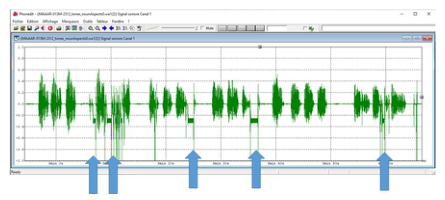
Kielelezo 6: Athari za kukatika midogo midogo kwa usambazaji wa umeme kwenye wimbi la sauti (Arusha, Tanzania, 2023)
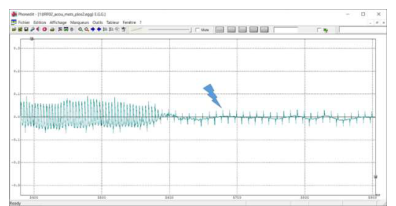
Kielelezo 7: Athari za kibadilishaji kisicho cha sinus safi kwenye ishara ya EGG (Kwermusl, Tanzania, 2020)
Swali muhimu linalofuata ni kuwa na suluhisho la kuchaji betri. Wakati mwingine tumechukua suluhisho la paneli za jua zinazobebeka zilizounganishwa na kidhibiti chaji. Ni suluhisho linalotufanya tuwe huru kabisa, jambo ambalo linavutia katika maeneo yaliyojitenga. Ubaya wake ni uzito na ukubwa wa paneli wakati wa kusafiri. Suluhisho lingine ni kuwa na betri kadhaa, kuzichaji usiku au wakati wa mapumziko na kisha kuzitumia wakati wa vipindi vya kurekodi. Tafadhali kumbuka kuwa ni marufuku kusafirisha baadhi ya betri kwenye ndege za abiria, kwa hiyo, ni muhimu kutafuta suluhisho na watoa huduma wa ndani.
4. Baadhi ya mifumo ya sauti ya lugha za Bonde la Ufa la Afrika
4.1 Kwa nini kulenga umakini kwenye Ufa wa Afrika?
Ufa Mkuu wa Afrika unajumuisha maeneo kadhaa ya lugha yanayomilikiwa na familia kuu nne za lugha za bara hili: Afro-Asiatic, Niger-Kongo, Nilo-Saharan na Khoesan (Kießling et al., 2007). Utofauti wa lugha wa eneo hili ni matokeo ya uhamiaji na mawasiliano, wakati mwingine ya kale sana, kati ya watu wa wawindaji-wakusanyaji, wafugaji na wakulima. Ulinganisho kati ya lugha unapendekeza awamu kadhaa za uhamiaji na mawasiliano ambayo yamebadilisha mandhari ya lugha mara kwa mara. Masafa mapana ya kijiografia ya baadhi ya familia za lugha, kama vile Kikushi, ambayo inaenea kutoka Ethiopia hadi Kenya na Tanzania, ni dalili ya mienendo hii ya kale ya idadi ya watu. Baadhi ya lugha kama Kisandawe na Kihadza zina sauti zinazofanana, milio ya kubofya, na zile za familia ya Khoesan inayopatikana Botswana na Namibia.
Mifumo ya sauti ya lugha za Bonde la Ufa ina aina maalum za sauti, ambazo baadhi yake si za kawaida katika lugha za dunia. Kesi ya konsonanti zisizo za mapafu kama vile konsonanti za kutoa hewa kwa nguvu, konsonanti za kuvuta hewa ndani, na milio ya kubofya inatambulika hasa. Je, konsonanti hizi ni mabaki ya kale sana ya vipengele ambavyo vinaakisiwa katika lugha za sasa? Au ni zao la taratibu za uvumbuzi na kuongezeka kwa ugumu wa sauti na mifumo ya sauti? Kuna uhusiano gani kati ya konsonanti zisizo za mapafu na mifumo ya kifiziolojia ya kumeza au kukohoa? Je, kuna uhusiano kati ya milio ya kubofya na konsonanti za kutoa hewa kwa nguvu?
Majibu ya maswali haya yanahitaji uchunguzi sahihi na maelezo ya mifumo ya utoaji wa fonimu za lugha hizi. Katika mradi wetu, mkazo uko kwenye lugha kadhaa kutoka familia tofauti za kilugha katika eneo hilo (Kielelezo 8).
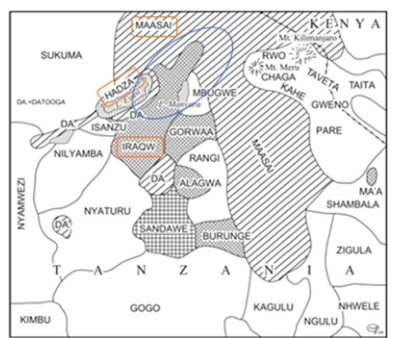
Kielelezo 8: Lugha za Eneo la Bonde la Ufa la Tanzania (Chanzo: Kießling et al., 2007)
4.2 Hadza
Hadza ni lugha inayozungumzwa kando ya mwambao wa Ziwa Eyasi nchini Tanzania na takriban watu 1,000 (Kielelezo 8). Kijadi, Wahadzabe ni wawindaji-wakusanyaji wa muda wote. Siku hizi, wengi wao wana uwezo wa lugha mbili katika Kiswahili lakini upitishaji wa lugha ya Hadza kwa kizazi kipya bado ni imara. Hata hivyo, hakuna mfumo wa maandishi sanifu uliopo (http://glottopedia.org).
Greenberg aliainisha Hadza kama Khoisan kutokana na matumizi yake ya konsonanti za midoko lakini Hadza sasa inachukuliwa kama lugha pekee. Mjadala ni tete kwa sababu ikiwa Hadza inahusishwa na familia ya Khoisan, tunaweza kuichukulia kama mabaki ya makazi yaliyopanuka ya watu wa Khoisan katika Afrika ya kati. Ikiwa, kwa upande mwingine, kama wasomi wengine wanavyofikiri, uhusiano wa Khoisan wa Hadza haujathibitishwa, tungekubali kwamba familia nyingine za lugha zilikuwepo kusini mwa Afrika, pengine zikiwa katika mgusano na Khoisan, na kwamba hatimaye zilitoweka, zikiacha nyuma Hadza pekee kama shahidi (Philipson, 2017). Maelezo sahihi ya Mfumo wa Sauti wa Hadza kwa hiyo ni suala muhimu.
Mfumo wa konsonanti wa Kihadza ni mojawapo wa tata zaidi duniani, ukiwa na takriban konsonanti 60 (Jedwali 1). Orodha hiyo ina utata (Miller, 2008; Sands, 2013). Wakati mwingine ni vigumu kujua kama kweli ni fonimu tofauti au ni tofauti ya alofoni ya fonimu nyingine.
Tulifanya misheni ya uwandani mwaka 2020 tukiwa na makao Mwangeza, mji ulioko kusini mwa Ziwa Eyasi (https://mapcarta.com/34359060). Mji huu hauko ndani ya eneo la Hadza na wazungumzaji wetu walilazimika kusafiri hadi mji huu kwa ajili ya kurekodi data. Tulirekodi wazungumzaji 4 wa kike na 4 wa kiume. Korasi yetu inajumuisha data juu ya milio ya kubofya, konsonanti za kutoa hewa kwa nguvu na vipengele vya konsonanti za awali za pua. Pia tuna usemi wa hiari kwa msemaji mmoja anayesimulia hadithi kuhusu kuwinda. Matokeo kuhusu midoko yanapatikana katika Demolin, Harvey et al., (2021).
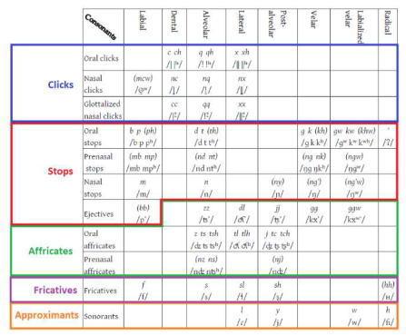
Jedwali la 1: Konsonanti za Hadza (zilizorekebishwa kutoka Miller, 2008)
4.3 Iraqw
Iraqw ni lugha ya Kikushi ya Kusini inayozungumzwa katika mikoa ya Manyara na Arusha ya Tanzania na zaidi ya nusu milioni ya wazungumzaji (Kießling et al., 2007). Watu wa Iraqw kimsingi ni wakulima. Iraqw ni mojawapo ya lugha za Kikushi za kusini kabisa katika phylum ya Afro-Asian (Kielelezo 8).
Asili ya kifonetiki ya mfumo wa sauti wa Iraqw (Jedwali 2) ni (1) mfululizo wa konsonanti za kutoa hewa kwa nguvu, (2) seti ndefu ya konsonanti za mkwaruzo zisizo na sauti, (3) tofauti kati ya konsonanti za kawaida na zilizotiwa midomo.
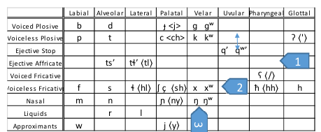
Jedwali 2: Konsonanti za Iraqw (zilizochukuliwa kutoka Mous, 1993)
Hali ya kutoa hewa kwa nguvu ya /q'/ inajadiliwa (Demolin, Ghio et al., 2021). Swali hili linalohusiana na konsonanti za kutoa hewa kwa nguvu linavutia kwa sababu konsonanti za kutoa hewa kwa nguvu pia zipo katika mfumo wa sauti wa Hadza (Jedwali 1) na vilevile miongoni mwa Sandawe, lugha nyingine ya kubofya inayozungumzwa kusini mwa eneo hilo (Kielelezo 8). Kwa kujua kwamba /tɬʼ/ inapatikana tu katika 1% ya lugha za dunia (Phoible, 2019), uwepo wake katika lugha 3 zilizo karibu kijiografia pengine unatokana na athari ya mgusano ambayo bado haijachunguzwa.
Tulifanya misheni ya kwanza ya uwandani mwaka 2020 tukiwa na makao makuu Kwermusl, mji ulioko kusini mwa wilaya ya Mbulu (https://mapcarta.com/N5033497899). Kijiji hiki ndicho kitovu cha eneo la Iraqw na tulirekodi wasemaji 5 wa kike na 5 wa kiume. Korasi yetu inajumuisha data kuhusu konsonanti za kutoa hewa kwa nguvu, utamkaji wa koromeo na glota, tofauti ya konsonanti za kawaida na zilizolabiwa, konsonanti za mkwaruzo, na irabu. Pia tulikuwa na msemaji mmoja akisoma tafsiri ya hadithi ya "upepo na jua" kwa lugha ya Iraqw. Tuliongeza wasemaji wawili wa kiume huko Arusha mnamo Juni 2022. Tulikamilisha korasi kwa wasemaji watatu wa kiume na watatu wa kike waliorekodiwa huko Mto Wa Mbu (https://mapcarta.com/34353418) kwenye mpaka kati ya eneo la Iraqw na ardhi ya Maasai mnamo Desemba 2022. Tuna baadhi ya data za video za kuchunguza tofauti kati ya miondoko ya midomo inayohusika katika utamkaji wa konsonanti /ŋ w, k w, g w, q w ́ , x w / na kuzilinganisha na ishara za nazali ya midomo miwili [m] na aproksimanti ya labiovelari [w] (Ghio et al., 2021).
4.4 Maasai
Maa ni lugha ya Kiniloti inayozungumzwa Kusini mwa Kenya na Kaskazini mwa Tanzania na watu milioni 1.5 wa Maasai. Nyika ya Maasai inafunika eneo kubwa nchini Kenya na Tanzania na lahaja kadhaa zinaweza kutofautishwa: Samburu, Ilchamus, Ilkeekoɲokie, Purko, Ilwasiŋgiʃu, Arusa, Kisongo, Parakuyo. Kijadi, Wamaasai ni wafugaji lakini baadhi ya sehemu pia ni wakulima, hasa Waarusha na hivi karibuni wakati wa utafiti wa uwandani mnamo Desemba 2023, tuligundua kwamba Wakisongo pia katika Wilaya ya Monduli wameanza kilimo cha kujikimu. Katika mfumo wake wa kifonolojia (Jedwali 3), Kimaa kina seti kamili ya konsonanti za kuvuta hewa ndani, mfumo kamili wa vokali [+/- ATR], toni, na tofauti ya fortis/lenis kwa vitelezi /j/ dhidi ya /j:/, /w/ dhidi ya /w:/, na pia kwa konsonanti ya mtetemo /ɾ/ dhidi ya /r/. Pia kuna seti iliyobuniwa kwa kina sana ya vihisishi, ideofoni na miito ya wanyama inayojumuisha sauti ambazo hazijaelezewa katika Alfabeti ya Kifonetiki ya Kimataifa (Andrason et al., 2023; Andrason et al., 2021; Karani et al., 2022). Utaratibu wa konsonanti za kuvuta hewa ndani si rahisi kuuona na matumizi ya aerofonometria, yaliyoelezewa katika §3.3, ni muhimu.
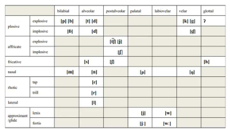
Jedwali 3: Konsonanti za Kimaasai (Karani et al., 2023)
Tulifanya misheni 3 za uwandani mwaka 2022-2023. Eneo la kwanza lilikuwa kijiji cha Ilkurot karibu na Arusha (https://mapcarta.com/N10836698430) ambako lahaja ya Kiarusha inazungumzwa. Tulirekodi wasemaji 14 wa kiume na 8 wa kike kwa madhumuni ya kifonetiki (konsonanti za kuvuta hewa ndani, vokali, viyeyusho, toni, ideofoni…). Zaidi ya hayo, tuliwarekodi kwa video mara mbili wasemaji wa ziada wakisimulia hadithi. Eneo la pili lilikuwa vijiji vya Esilalei na Selela ambako lahaja ya Kisongo inazungumzwa (https://mapcarta.com/N946585023). Tuliwarekodi wasemaji 8 wa kiume na 4 wa kike kwa madhumuni ya kifonetiki. Vivyo hivyo, tuliwarekodi kwa video wasemaji wa ziada wakisimulia hadithi vijijini. Ili kuchunguza mawasiliano kati ya Wamaasai na watu wa Iraqw, tulifanya utafiti katika Lositete (https://mapcarta.com/N7512233367) ambapo tulirekodi video za wazungumzaji 5 wakielezea hadithi zenye upekee wa kuwa Wamaasai wa Arusa waliozungukwa na Wamaasai wa Kisongo na Iraqw. Baadhi ya matokeo ya awali kuhusu konsonanti za kuvuta hewa ndani yameshirikishwa na Demolin et al. (2022).
5. Hitimisho
Umuhimu wa data za uchunguzi ili kukadiria kwa kiasi matukio yanayozingatiwa ni sehemu ya mkabala wa kisayansi. Hivi ndivyo ilivyo katika isimu hasa katika Isimu ya Kiafrika. Mifano iliyotolewa hapo awali inaonyesha kwamba wataalamu wa fonetiki wanapaswa kupata seti za data za kiasi ili kuelewa mifumo ya tofauti. Bonde la Ufa nchini Tanzania ni eneo bora kwa kuangalia vipengele mbalimbali na vya asili vya kiisimu. Uzoefu tunaoupata katika misheni za kufanya kazi ya uwandani unathibitisha kwamba kazi ya uwandani ya 'miguu michafu' si jambo rahisi lakini kwa hakika inawezekana na inaweza kufanikiwa sana ikiwa watafiti watajiandaa vizuri. Kwa kuwa baadhi ya data za kiisimu ni adimu na wakati mwingine ni vigumu kuzikusanya, kushiriki data ni kipengele muhimu ambacho wanaisimu wanapaswa kuchukulia kwa uzito wakati wa ukusanyaji wa data na baada ya kazi ya uwandani. Misheni zetu za kazi ya uwandani zimefanikiwa kwa kiasi kikubwa kwa sababu mmoja wa washiriki ni mwanaisimu aliyefunzwa ambaye ni mzungumzaji asilia wa mojawapo ya lugha zinazochunguzwa. Kwa hiyo, tunapendekeza kufanya kazi na watafiti wa ndani ili kuongeza nafasi za kufanikiwa katika misheni za kazi ya uwandani.
6. Shukrani
Utafiti huu ulifadhiliwa na ruzuku ya CNRS "SYSORI" (Dispositif de Soutien aux Collaborations avec l'Afrique subsaharienne, 2021) na kwa ruzuku ya CNRS "COSYSORI" (Africa Visiting Fellowships Programme, 2023). Tunamshukuru CEP (https://cep.lpl-aix.fr/) kwa kukopesha vifaa vilivyotumika uwandani. Tunawashukuru Andrew Harvey na Richard Griscom kwa ushiriki wao katika kurekodi na Hadza. Tunamshukuru Maarten Mous kwa ushiriki wake katika kurekodi na Iraqw. Tunamshukuru L Jalby, kutoka kampuni ya OZO (https://ozo-electric.com/en/) kwa ushauri wao na bidhaa zinazohusiana na usambazaji wa umeme kwa kutumia vifaa vya sola na betri.
7. Marejeo
Adda, G., Stüker, S., Adda-Decker, M., Ambouroue, O., Besacier, L., Blachon, D., Bonneau-Maynard, H., Godard, P., Hamlaoui, F., Idiatov, D., Kouarata, G.-N., Lamel, L., Makasso, E.-M., Rialland, A., Van De Velde, M., Yvon, F., & Zerbian, S. (2016). Breaking the Unwritten Language Barrier : The BULB Project. Procedia Computer Science, 81, 8-14. https://doi.org/10.1016/j.procs.2016.04.023
Andrason, A. & Karani, M. (2023). Emotive interjections in Arusa Maasai. Italian Journal of Linguistics, 35(2), 75-118. https://doi.org/10.26346/1120-2726-212
Andrason, A. and Karani, M. (2021). Conative calls to animals: From Arusa Maasai to a cross-linguistic prototype. Łódź Papers in Pragmatics, 17(1), 3-40. https://doi.org/10.1515/lpp-2021-0002
Blachon, D., Gauthier, E., Besacier, L., Kouarata, G.- N., Adda-Decker, M., & Rialland, A. (2016). Parallel Speech Collection for Under-resourced Language Studies Using the Lig-Aikuma Mobile Device App. Procedia Computer Science, 81, 61-66. https://doi.org/10.1016/j.procs.2016.04.030
Boyd, M., Mazaudon, M. , Michaud, A., Guillaume, S., François, A, Adamou, E (2014). Documenting and Researching Endangered Languages: The Pangloss Collection. Language Documentation & Conservation. 8: 119-135.
Crowley, T. (2007), Field Linguistics. A Beginner's Guide, Oxford, Oxford University Press.
Demolin, D. (2011). Aerodynamic techniques for phonetic fieldwork. ICPhS International Congress of Phonetic Sciences, Aug 2011, Hong Kong, China. ⟨hal-00646103⟩
Demolin, D., Ghio, A., Mous, M. (2021). A phonetic study of Iraqw ejectives consonants. 10th World Congress of African Linguistics (WOCAL), Leiden, Netherlands. ⟨hal-03156237⟩
Demolin, D., Harvey, A., Griscom, R., & Ghio, A. (2021). Acoustic features of Hadza clicks. The Journal of the Acoustical Society of America, 150(4_Supplement), A68-A68. https://doi.org/10.1121/10.0007649
Demolin, D., Ghio, A., Karani, M. (2022). Acoustic, aerodynamic and articulatory features of Maasai implosives. Colloquium on African Languages and linguistics, Leiden, Netherlands ⟨hal-03767661⟩
Gasquet-Cyrus, M. (2015). I come and go between fieldwork: Thoughts on Fieldwork in Sociolinguistic Theorization. Langage et société, 154, 17-32. https://doi.org/10.3917/ls.154.0017
Ghio, A., & Teston, B. (2004). Evaluation of the acoustic and aerodynamic constraints of a pneumotachograph for speech and voice studies. International Conference on Voice Physiology and Biomechanics, Univ. Méditerranée, 2004, Marseille, France. pp.55-58. ⟨hal-00142982⟩
Ghio, A., Mous, M., & Demolin, D. (2021). Labialized consonants in Iraqw. 10th World Congress of African Linguistics. ⟨hal-03156276⟩
Güldemann, T. (Éd.). (2018). The Languages and Linguistics of Africa. De Gruyter. https://doi.org/10.1515/9783110421668
Karani, M., & Andrason, A. (2022). Ideophones in Arusa Maasai : Syntax, morphology, and phonetics. Open Linguistics, 8(1), 440-458. https://doi.org/10.1515/opli-2022-0220
Karani M., Andrason A. (2023), A Living Grammar Sketch of Arusa, Living Tongues Institute for Endangered Languages https://doi.org/10.5281/ZENODO.10389820
Kießling, R., Mous, M., & Nurse, D. (2007). The Tanzanian Rift Valley area. In B. Heine & D. Nurse (Éds.), A Linguistic Geography of Africa (p. 186-227). Cambridge University Press. https://doi.org/10.1017/CBO9780511486272.007
Maddieson, I. (2002). Phonetics in the Field. Annual Meeting of the Berkeley Linguistics Society, 28(1), 411. https://doi.org/10.3765/bls.v28i1.3855
Miller, K. (2008). Hadza grammar notes. Symposium on Khoisan Languages and Linguistic: In Memory of Professor Anthony Traill, Riezlern.
Mous, M. (1993). A Grammar of Iraqw. Helmut Buske Verlag.
Phillippson, G. (2017). Langues et histoire dans le Rift. In Le Rift est-africain (IRD Éditions, p. 367-376). https://books.openedition.org/irdeditions/1790
Sands, B. (2013). Phonetics and Phonology: Hadza. In R. Vössen (Ed.). The Khoesan languages. London. Routledge.
Smitheran, J. R., & Hixon, T. J. (1981). A clinical method for estimating laryngeal airway resistance during vowel production. The Journal of Speech and Hearing Disorders, 46(2), 138-146. https://doi.org/10.1044/jshd.4602.138
8. Marejeo ya Rasilimali za Lugha
Atlasi ya lugha za Tanzania. (2009). Mradi wa Lugha za Tanzania, Chuo Kikuu cha Dar es Salaam. ISBN: 978-9987-691-26-5
PHOIBLE 2.0 as CLDF dataset (v2.0), Moran, S., & McCloy,(2019). https://doi.org/10.5281/ZENODO.2593234
English na Kiswahili
Doing Phonetics in the Rift Valley: Sound Systems of Maasai, Iraqw and Hadza
Kufanya Fonetiki katika Bonde la Ufa: Mifumo ya Sauti ya Kimaasai, Kiiraqw na Kihadza
Affiliations
Ghio1 A., Demolin2 D., Karani3 M., Meynadier1 Y.
(1) Aix Marseille Univ, CNRS, LPL, Aix-en-Provence, France
(2) LPP (UMR7018, CNRS/Sorbonne Nouvelle), Paris, France
(3) Centre for Communication Studies, College of Humanities, Univ of Dar es Salaam, Tanzania
,,
Taasisi
Ghio1 A., Demolin2 D., Karani3 M., Meynadier1 Y.
(1) Aix Marseille Univ, CNRS, LPL, Aix-en-Provence, France
(2) LPP (UMR7018, CNRS/Sorbonne Nouvelle), Paris, France
(3) Centre for Communication Studies, College of Humanities, Univ of Dar es Salaam, Tanzania
,,
Abstract
Muhtasari
This article discusses the contribution of experimental techniques to the recording of phonetic data in the field. Only a small part of the phonological systems of African languages is described with precision. This is why it is important to collect empirical data in the form of sound, video and physiological recordings. This allows research questions such as patterns of variation to be addressed. Analytical methods show how to interpret data from physical principles and integrate them into appropriate models. The question of linguistic contact between different language families is also addressed. To achieve these general objectives, we present the way we design corpora, and the different ways of recording data with crucial technical considerations during fieldwork. Finally, we focus on 3 languages spoken in the Great African Rift Zone, which includes several linguistic areas belonging to the four major linguistic families of the continent. (1) Hadza is a click language with a very complex consonant system. (2) Iraqw is a Cushitic language with ejective consonants. (3) Maasai is a Nilotic language with implosive consonants and a very elaborate set of interjections, ideophones and animal calls that include sounds not described in the International Phonetic Alphabet.
Makala hii inajadili mchango wa mbinu za kimajaribio katika kurekodi data za kifonetiki uwandani. Sehemu ndogo tu ya mifumo ya fonolojia ya lugha za Afrika imeelezwa kwa usahihi. Ndiyo maana ni muhimu kukusanya data za kimajaribio kwa namna ya rekodi za sauti, video na kifiziolojia. Hii inaruhusu maswali ya utafiti kama vile mifumo ya utofauti kushughulikiwa. Mbinu za kichanganuzi zinaonyesha jinsi ya kufasiri data kutoka kwa kanuni za kifizikia na kuziunganisha katika miundo mwafaka. Swali la mgusano wa kiisimu kati ya familia tofauti za lugha pia linashughulikiwa. Ili kufikia malengo haya ya jumla, tunawasilisha jinsi tunavyobuni korasi, na njia tofauti za kurekodi data pamoja na mazingatio muhimu ya kiufundi wakati wa kazi ya uwandani. Hatimaye, tunazingatia lugha 3 zinazozungumzwa katika Ukanda wa Ufa Mkubwa wa Afrika, ambao unajumuisha maeneo kadhaa ya lugha yanayomilikiwa na familia kuu nne za lugha za bara hili. (1) Hadza ni lugha ya mibofyo yenye mfumo changamano sana wa konsonanti. (2) Iraqw ni lugha ya Kikushi yenye konsonanti za kutoa hewa kwa nguvu. (3) Maasai ni lugha ya Kiniloti yenye konsonanti za kuingiza hewa na seti iliyobuniwa kwa kina sana ya vihisishi, ideofoni na miito ya wanyama inayojumuisha sauti ambazo hazijaelezewa katika Alfabeti ya Kimataifa ya Fonetiki.
Keywords
Maneno Muhimu
experimental phonetics, fieldwork, hadza, iraqw, maasai
fonetiki ya majaribio, kazi ya uwandani, hadza, iraqw, maasai
1. The need for empirical data
1. Uhitaji wa data za uchunguzi
More than 2000 languages are spoken on the African continent (Güldemann, 2018). Only a small part of them has been described in grammar form. Among those that have been described, the part of grammar devoted to phonetics and phonology is often less than 10% of the content of the full grammar (Maddieson, 2002). In addition, Maddieson indicated that "while syntactic patterns are documented with example sentences, often from natural discourse or texts, the phonetic facts are rarely if ever documented by the presentation of hard evidence". The phonological descriptions to which we have access are sometimes imprecise and there is often an ambiguity of symbols used. To illustrate the lack of data, we can compare the map of languages described in the PHOIBLE database (Moran, S., & McCloy, 2019) which contains 2186 distinct languages and the actual map of languages spoken in Tanzania (Figure 1). Although this database is the most extensive in the field, only 30 languages are proposed in PHOIBLE among the 125 ones spoken in Tanzania. Not only is the data reduced, but it also contains inaccuracies and even errors. For example, if you select the Iraqw Language (Glottocode: iraq1241), the Iraqw sound inventory proposed by the Stanford Phonology Archive (SPA) or by the UCLA Phonological Segment Inventory Database (UPSID) includes implosive consonants in this language as [ɓ] and [ɗ], which is false considering the detailed work by Mous (1993). Furthermore, still in the Iraqw Language, the consonant /q/ is most of the time described as a voiceless uvular plosive but the realization of this phoneme appears not as pulmonic but with an ejective mechanism, which would merit a phonological representation /q'/. In the same way, if you select the Maasai Language (Glottocode: masa1300), the Maasai sound inventory proposed by the Stanford Phonology Archive (SPA) or by the UCLA Phonological Segment Inventory Database (UPSID) includes a voiceless alveolar trill [r̥ ] whose voiceless feature is contested (Karani et al., 2023).
Zaidi ya lugha 2000 zinazungumzwa katika bara la Afrika (Güldemann, 2018). Ni sehemu ndogo tu kati yao ambayo imeelezewa katika muundo wa sarufi. Miongoni mwa zile ambazo zimeelezewa, sehemu ya sarufi inayohusu fonetiki na fonolojia mara nyingi ni chini ya 10% ya maudhui ya sarufi nzima (Maddieson, 2002). Aidha, Maddieson alionyesha kwamba "wakati mifumo ya kisintaksia inaandikwa kwa sentensi za mifano, mara nyingi kutoka kwa mazungumzo asilia au maandiko, ukweli wa kifonetiki ni nadra au kamwe kuandikwa kwa uwasilishaji wa ushahidi thabiti". Maelezo ya kifonolojia ambayo tunaweza kuyapata wakati mwingine si sahihi na mara nyingi kuna utata wa alama zinazotumika. Ili kuonyesha ukosefu wa data, tunaweza kulinganisha ramani ya lugha zilizoelezewa katika hifadhidata ya PHOIBLE (Moran, S., & McCloy, 2019) ambayo ina lugha 2186 tofauti na ramani halisi ya lugha zinazozungumzwa nchini Tanzania (Kielelezo 1). Ingawa hifadhidata hii ndiyo pana zaidi katika uwanja huu, ni lugha 30 pekee zinazopendekezwa katika PHOIBLE kati ya zile 125 zinazozungumzwa nchini Tanzania. Si tu kwamba data imepunguzwa, bali pia ina makosa madogo na hata makosa makubwa. Kwa mfano, ukichagua Lugha ya Iraqw (Glottocode: iraq1241), orodha ya sauti za Iraqw iliyopendekezwa na Stanford Phonology Archive (SPA) au na UCLA Phonological Segment Inventory Database (UPSID) inajumuisha konsonanti za kuvuta hewa ndani katika lugha hii kama [ɓ] na [ɗ], jambo ambalo si kweli kwa kuzingatia kazi ya kina ya Mous (1993). Aidha, bado katika Lugha ya Iraqw, konsonanti /q/ mara nyingi inaelezewa kama kipasuko kisicho na sauti cha uvular lakini utamkaji wa fonimu hii unaonekana si wa mapafu bali kwa utaratibu wa kutoa hewa kwa nguvu, jambo ambalo lingestahili uwakilishi wa kifonolojia /q'/. Kwa njia hiyo hiyo, ukichagua lugha ya Kimaasai (Glottocode: masa1300), orodha ya sauti za Kimaasai iliyopendekezwa na Stanford Phonology Archive (SPA) au na UCLA Phonological Segment Inventory Database (UPSID) inajumuisha trili ya alveolari isiyo na sauti [r̥ ] ambayo sifa yake ya kutokuwa na sauti inapingwa (Karani et al., 2023).
Figure 1: Languages spoken in Tanzania. On the left: Inventory in PHOIBLE database (Moran, S., & McCloy, 2019). On the right: the Atlasi ya lugha za Tanzania,
Kielelezo 1: Lugha zinazozungumzwa Tanzania. Kushoto: Orodha katika hifadhidata ya PHOIBLE (Moran, S., & McCloy, 2019). Kulia: Atlasi ya lugha za Tanzania,
(2009)
(2009)
For all these reasons, it is important to collect empirical data in the form of sound, video and physiological recordings. This is the goal of the projects, "SYSORI" (Sound Systems of Rift Valley languages) and its extension "COSYSORI", funded by CNRS (see §.6 acknowledgements). The objective of this article is to provide some preliminary details.
Kwa sababu hizi zote, ni muhimu kukusanya data za uchunguzi kwa namna ya rekodi za sauti, video na za kifiziolojia. Hili ndilo lengo la miradi, "SYSORI" (Mifumo ya Sauti ya lugha za Bonde la Ufa) na upanuzi wake "COSYSORI", inayofadhiliwa na CNRS (tazama §.6 shukrani). Lengo la makala haya ni kutoa baadhi ya maelezo ya awali.
2. Elements of the methodology
2. Vipengele vya mbinu
2.1 Field linguistic or fieldwork at home
2.1 Isimu ya uwandani au kazi ya uwandani nyumbani
There are several ways to do field linguistics. If the grammar of the language, and in particular the phonological system, is precisely described, it is possible to use an ecological approach as recommended by Gasquet (2015). As we work on under documented languages, it is not possible for us to describe linguistic phenomena on the fly. We apply an approach based on the corpus. We practice elicitation with speakers from a defined community, allowing the description of phonetic characteristics of the language studied. Field linguistics certainly requires specific preparation, knowledge of places, history, geography, adaptation to local culture, the use of interpreters, and contact with people. If we refer to Crowley's (2007) description, we practice "dirty feet" linguistics. Nothing to do with the recording of native speakers within universities, defined by (Crowley, 2007) as "fieldwork at home". In the field, we have to face sociolinguistic realities (social hierarchies, tensions, discrimination, differences according to age, sex, etc.). We must also find solutions linked to practical, logistical and technical challenges. We can mention, for example, sometimes it is very difficult to access isolated villages in the countryside. We also think about the absence of electricity or an intermittent electricity supply, thus requiring the use of batteries and solar panels. We can cite the difficulties of obtaining a low-noise environment with the nearby presence of children, livestock, etc. Such practice requires good field experience and enough preparation before embarking on fieldwork missions.
Kuna njia kadhaa za kufanya taaluma ya lugha. Iwapo sarufi ya lugha, na hasa mfumo wa kifonolojia, imeelezwa kwa usahihi, inawezekana kutumia mkabala wa kiikolojia kama inavyopendekezwa na Gasquet (2015). Tunapofanya kazi kwenye lugha zenye nyaraka chache, haiwezekani kwetu kuelezea matukio ya kiisimu papo hapo. Tunatumia mkabala unaotegemea korasi. Tunawauliza wazungumzaji kutoka jamii iliyobainishwa maneno na sentensi (ukusanyaji wa data za lugha), ikiruhusu maelezo ya sifa za kifonetiki za lugha inayochunguzwa. Isimu ya uwandani kwa hakika inahitaji maandalizi mahususi, ujuzi wa maeneo, historia, jiografia, kuzoea utamaduni wa kienyeji, matumizi ya wakalimani, na mawasiliano na watu. Tukirejelea maelezo ya Crowley (2007), tunafanya isimu ya "miguu michafu". Haihusiani hata kidogo na kurekodi kwa wasemaji wenyeji ndani ya vyuo vikuu, kinachofafanuliwa na (Crowley, 2007) kuwa "kazi ya nyumbani". Uwandani, tunapaswa kukabiliana na hali halisi za kiisimujamii (madaraja ya kijamii, mivutano, ubaguzi, tofauti kulingana na umri, jinsia, n.k.). Lazima pia tutafute suluhu zinazohusiana na changamoto za kiutendaji, za kiusafirishaji na za kiufundi. Tunaweza kutaja, kwa mfano, wakati mwingine ni vigumu sana kufikia vijiji vilivyojitenga mashambani. Pia tunafikiria kuhusu kukosekana kwa umeme au usambazaji wa umeme wa vipindi, hivyo kuhitaji matumizi ya betri na paneli za jua. Tunaweza kutaja ugumu wa kupata mazingira yenye kelele ndogo kukiwa na uwepo wa karibu wa watoto, mifugo, n.k. Mazoezi kama hayo yanahitaji uzoefu mzuri wa uwandani na maandalizi ya kutosha kabla ya kuanza misheni za kazi ya uwandani.
2.2 Ethical aspects
2.2 Vipengele vya kimaadili
In our fieldwork, an interpreter, in our case a native speaker who is a trained linguist, clearly explains to volunteers what the goal of the research project is. Participants are informed about the way research will be conducted as well as their rights in the project including freedom to withdraw themselves from the project without giving reasons to do so. As our participants do not always know how to read and/or write, this information and the participant's agreement is audio or video recorded. The consent recordings are kept in a special storage location shared by project team members because they are non-anonymized data. All scientific data is then anonymised through the use of codes. Only a local investigator keeps private information concerning the speakers in order to contact them again in the future if necessary for more fieldwork. Only general anonymous information (age, sex, languages they speak, and the level of education) is accessible as methodological data. To compensate for the time spent, all participants receive a small cash allowance, as do the people who coordinate the target speakers.
Katika kazi yetu ya uwandani, mkalimani, katika kisa chetu mzungumzaji asilia ambaye ni mwanaisimu aliyefunzwa, anawaeleza kwa uwazi wajitoleaji lengo la mradi wa utafiti ni nini. Washiriki wanafahamishwa kuhusu namna utafiti utakavyofanywa pamoja na haki zao katika mradi ikiwa ni pamoja na uhuru wa kujiondoa wenyewe kutoka kwenye mradi bila kutoa sababu za kufanya hivyo. Kwa kuwa washiriki wetu huwa hawajui kusoma na/au kuandika, taarifa hii na makubaliano ya mshiriki hurekodiwa kwa sauti au video. Rekodi za idhini huwekwa katika eneo maalum la kuhifadhi linaloshirikiwa na wanachama wa timu ya mradi kwa sababu ni data isiyofichwa utambulisho. Takwimu zote za kisayansi baadaye hufichwa kwa kutumia nambari. Mtafiti wa ndani pekee anahifadhi taarifa binafsi zinazohusu wasemaji ili kuwasiliana nao tena katika siku zijazo ikiwa inahitajika kwa utafiti zaidi wa uwanja. Ni taarifa za jumla zisizotambulisha utambulisho pekee (umri, jinsia, lugha wanazozungumza, na kiwango cha elimu) zinazopatikana kama data ya kimbinu. Ili kufidia muda uliotumika, washiriki wote hupokea posho ndogo ya fedha taslimu, kama wanavyopokea watu wanaoratibu wazungumzaji walengwa.
2.3 How do we design corpus?
2.3 Je, tunabuni vipi mkusanyiko wa maandishi?
For us, the main corpus is oriented towards phonetic description. To obtain relevant and usable data, our method is to create an ad hoc corpus to answer a particular question. Most of the time, it is a list of words which includes the phonemes which we think have phonetic qualities under investigation. For instance, to observe the contrast between modal vs labialised consonants in Iraqw, we proposed a list of words with the modal expressions (konki, dakaát, anága kií/, daktani…) vs labialized (lakwanti, múk tlakw, án aga kwandeékw, tatlkwa…). To study the non-pulmonic consonants, we select words with ejective consonants in Iraqw or implosive consonants in Maasai. In this type of study, it is important to contrast these units with pulmonic ones in order to observe the typicality of non-pulmonic contrasted with pulmonic ones. In all the cases, the lists should be well designed and balanced in terms of occurrences (same amount of data by group if we study a contrast). If possible, the target phoneme should be placed at the initial, median or final position. The left and right contexts of the target expression should be managed. It can vary if we consider that the context can influence the realization of the target phoneme.The way to elicit the corpus can vary, depending on the capabilities of the speakers. Reading the list is the easiest way but it means that the chosen words should be written without ambiguity and above all, the participants should be able to read fluently. This is far from being the case in the field. An alternative is to practice a repetition: a referent speaker pronounces the target and the participant repeats it. We can also reinforce the elicitation by the proposition translated into another language mastered by the participant. For instance, in Tanzania where the majority of people speak Kiswahili, we would start by the word in Kiswahili and then the word in the studied language. The amount of data must be large enough to obtain statistically significant results and above all to have legitimacy to generalize the results. It is also important to record at least 10 speakers (5 male & 5 female) in order to neutralize a possible atypical participant. It can be important to mix also young, medium and old people but most of the time, it is not possible to fulfil all the ideal conditions in the field since each field site has its unique settings and requirements due to its geography, socio-political and cultural aspects. During the recording of data, it is also better if the speakers repeat the utterance or corpus several times in order to see if the phonetic realization is stable or not.
Kwetu sisi, mkusanyiko mkuu wa maandishi umeelekezwa kwenye maelezo ya kifonetiki. Ili kupata data muhimu na inayoweza kutumika, mbinu yetu ni kuunda korasi maalum ili kujibu swali fulani. Mara nyingi, ni orodha ya maneno ambayo inajumuisha fonimu ambazo tunadhani zina sifa za kifonetiki zinazochunguzwa. Kwa mfano, ili kuangalia tofauti kati ya konsonanti za kawaida dhidi ya zilizolabiwa katika Kiiraqw, tulipendekeza orodha ya maneno yenye konsonanti za kawaida (konki, dakaát, anága kií/, daktani…) dhidi ya vilivyolabiwa (lakwanti, múk tlakw, án aga kwandeékw, tatlkwa…). Ili kuchunguza konsonanti zisizo za mapafu, tunachagua maneno yenye konsonanti za kutoa hewa kwa nguvu katika Kiiraqw au konsonanti za kuvuta hewa ndani katika Kimaasai. Katika aina hii ya utafiti, ni muhimu kulinganisha vitengo hivi na vile vya mapafu ili kuangalia tabia ya kawaida ya zisizo za mapafu ukilinganishwa na za mapafu. Katika hali zote, orodha zinapaswa kuundwa vizuri na kusawazishwa kwa idadi ya matukio (kiasi sawa cha data kwa kila kikundi ikiwa tunachunguza tofauti). Ikiwezekana, fonimu lengwa inapaswa kuwekwa katika nafasi ya mwanzo, katikati au mwisho. Mazingira ya kushoto na kulia ya usemi lengwa yanapaswa kudhibitiwa. Inaweza kubadilika ikiwa tunazingatia kwamba muktadha unaweza kuathiri utamkaji wa fonimu lengwa. Njia ya kukusanya korasi inaweza kubadilika, kutegemea uwezo wa wazungumzaji. Kusoma orodha ni njia rahisi zaidi lakini inamaanisha kwamba maneno yaliyochaguliwa yanapaswa kuandikwa bila utata na juu ya yote, washiriki wanapaswa kuwa na uwezo wa kusoma kwa ufasaha. Hii iko mbali sana na kuwa hivyo katika uwanja. Njia mbadala ni kufanya mazoezi ya kurudia: mzungumzaji rejea anatamka lengwa na mshiriki analirudia. Tunaweza pia kuimarisha ukusanyaji wa data kutoka kwa mzungumzaji kwa pendekezo lililotafsiriwa katika lugha nyingine anayoimudu mshiriki. Kwa mfano, nchini Tanzania ambako watu wengi wanazungumza Kiswahili, tungeanza kwa neno la Kiswahili na kisha neno katika lugha inayochunguzwa. Kiasi cha data lazima kiwe kikubwa vya kutosha kupata matokeo muhimu kitakwimu na juu ya yote kuwa na uhalali wa kujumlisha matokeo. Ni muhimu pia kurekodi angalau wazungumzaji 10 (wanaume 5 na wanawake 5) ili kusawazisha mshiriki yeyote asiye wa kawaida. Inaweza kuwa muhimu kuchanganya pia vijana, watu wa makamo na wazee lakini mara nyingi, haiwezekani kutimiza masharti yote bora uwanjani kwani kila eneo la utafiti lina mipangilio na mahitaji yake ya kipekee kutokana na jiografia, vipengele vya kijamii na kisiasa na kiutamaduni. Wakati wa kurekodi data, ni bora pia ikiwa wazungumzaji wanarudia usemi au korasi mara kadhaa ili kuona kama utamkaji wa kifonetiki ni thabiti au la.
The study of prosodic features needs another type of item. If the studied language has tones where the variation of tone can change the meaning, it is possible to work with isolated minimal pairs: for instance in Maasai, áàdàmú ('he will remember me') vs áádámú ('I remember you'). This can be the first step to study the tonal system of the language. But for a substantial prosodic analysis, it is better to observe longer sequences; it can be sentences, texts or spontaneous speech. An valuable aspect of data collection is also to record spontaneous speech. It is important to collect stories and not only specific target data. The content can be a valuable element of heritage and further analysis of data to answer. In this situation, we try to record oral history using a video camera. The technical design is described further in the subsequent sections.
Utafiti wa vipengele vya prosodia unahitaji aina nyingine ya kipengele. Ikiwa lugha inayofanyiwa utafiti ina toni ambapo mabadiliko ya toni yanaweza kubadilisha maana, inawezekana kufanya kazi na jozi ndogo zilizotengwa: kwa mfano katika Kimaasai, áàdàmú ('atakumbuka mimi') dhidi ya áádámú ('nakukumbuka wewe'). Hii inaweza kuwa hatua ya kwanza kuchunguza mfumo wa toni wa lugha. Lakini kwa uchambuzi wa kina wa prosodia, ni bora kuchunguza mifuatano mirefu zaidi; inaweza kuwa sentensi, maandishi au usemi wa kawaida. Sehemu muhimu ya ukusanyaji wa data pia ni kurekodi mazungumzo ya hiari. Ni muhimu kukusanya hadithi na si tu data maalum iliyolengwa. Maudhui yanaweza kuwa kipengele muhimu cha urithi na uchambuzi zaidi wa data ili kujibu. Katika hali hii, tunajaribu kurekodi historia simulizi kwa kutumia kamera ya video. Muundo wa kiufundi unaelezwa zaidi katika sehemu zinazofuata.
2.4 How do we record the corpus?
2.4 Je, tunarekodi vipi korasi?
It is now possible to use applications, which can help with data recording. For instance, LIG-Aikuma is a mobile app for speech data collection and language documentation (Blachon et al., 2016). One particular capability is the "respeaking" mode where the operator can record first a referent speaker. After a short processing step, the experimenter can playback this reference for other speakers. This mode can avoid a fastidious repetition for the native referent speaker. It does not replace the physical presence of an interpreter or native speaker but it could allow us to record new data without the physical presence of the referent if we cannot do otherwise. This application has the advantage since it is portable and it can work on a mobile phone. Unfortunately, it does not work on a slightly more sophisticated station equipped with a laptop, a sound card and a good microphone. Indeed, in order to obtain good sound data, we prefer to use good electrostatic microphones connected to an external soundboard. For certain specific corpora, we also use specialized devices that allow us to record physiological data. We will describe this further.
Sasa inawezekana kutumia programu tumizi, ambazo zinaweza kusaidia katika kurekodi data. Kwa mfano, LIG-Aikuma ni programu tumizi ya simu ya mkononi kwa ajili ya ukusanyaji wa data za usemi na uhifadhi wa lugha (Blachon et al., 2016). Uwezo mmoja mahususi ni hali ya "respeaking" ambapo opereta anaweza kurekodi kwanza mzungumzaji rejea. Baada ya hatua fupi ya uchakataji, mfanyajaribio anaweza kuchezesha rejea hii kwa wazungumzaji wengine. Njia hii inaweza kuepuka urudiaji unaochosha kwa mzungumzaji asilia wa rejeleo. Haichukui nafasi ya uwepo halisi wa mkalimani au mzungumzaji asilia lakini inaweza kuturuhusu kurekodi data mpya bila uwepo halisi wa mrejeleaji ikiwa hatuwezi kufanya vinginevyo. Programu hii ina faida kwa kuwa inaweza kubebeka na inaweza kufanya kazi kwenye simu ya mkononi. Kwa bahati mbaya, haifanyi kazi kwenye kituo chenye kisasa zaidi kidogo kilicho na kompyuta ya mkononi, kadi ya sauti na maikrofoni nzuri. Kwa hakika, ili kupata data nzuri ya sauti, tunapendelea kutumia maikrofoni nzuri za kielektroniki zilizounganishwa kwenye ubao wa sauti wa nje. Kwa korasi fulani maalum, tunatumia pia vifaa maalumu vinavyoturuhusu kurekodi data za kifiziolojia. Tutaelezea hili zaidi.
2.5 Annotation and segmentation
2.5 Ufafanuzi na ugawaji
Annotating a corpus consists of adding relevant information for its use. This consists of indicating orthographically the content of the oral data but also and above all (in phonetics) of precisely identifying the linguistic boundaries (segmentation). When the corpus is elicitated as we do, the transcription is trivial if the speaker pronounces correctly the list of items. But it is rarely perfect and we are faced with hesitation, errors, autocorrections… The second step is the phonetic segmentation where we need to set the contents and the boundaries of the spoken text. This process is time-consuming because, with no-documented languages, only a manual process is possible. We know that some projects propose some tools to automate this processing. We think for example the BULB project which aims at supporting the documentation of unwritten languages with the help of automatic speech and language processing, in particular automatic speech recognition (Adda et al., 2016). We also are aware of the CLD2025 project (https://anr.fr/Project-ANR-19-CE38-0015) whose goal is to facilitate the task of documenting endangered languages by leveraging the potential of computational methods. But for the moment, the use of these technologies is not yet possible due to the lack of data and knowledge of the languages studied.
Kufafanua mkusanyiko kunajumuisha kuongeza taarifa muhimu kwa matumizi yake. Hii inajumuisha kuonyesha kwa tahajia maudhui ya data simulizi lakini pia na zaidi ya yote (katika fonetiki) kutambua kwa usahihi mipaka ya kiisimu (ugawaji). Wakati korasi inakusanywa kutoka kwa mzungumzaji kama tunavyofanya, unukuzi ni rahisi ikiwa mzungumzaji anatamka kwa usahihi orodha ya vipengele. Lakini ni nadra kuwa kamili na tunakabiliwa na kusitasita, makosa, marekebisho binafsi… Hatua ya pili ni ugawaji wa kifonetiki ambapo tunahitaji kuweka maudhui na mipaka ya matini iliyozungumzwa. Mchakato huu unatumia muda mwingi kwa sababu, kwa lugha zisizo na nyaraka, ni mchakato wa mikono pekee unaowezekana. Tunajua kwamba baadhi ya miradi inapendekeza baadhi ya zana za kuendesha kiotomatiki mchakato huu. Tunafikiria kwa mfano mradi wa BULB ambao unalenga kusaidia uwekaji nyaraka wa lugha zisizoandikwa kwa msaada wa usindikaji kiotomatiki wa usemi na lugha, hasa utambuzi wa usemi wa kiotomatiki (Adda et al., 2016). Pia tunafahamu mradi wa CLD2025 (https://anr.fr/Project-ANR-19-CE38-0015) ambao lengo lake ni kuwezesha kazi ya kuweka nyaraka lugha zilizo hatarini kwa kutumia uwezo wa mbinu za kikompyuta. Lakini kwa sasa, matumizi ya teknolojia hizi bado hayawezekani kutokana na ukosefu wa data na ujuzi wa lugha zinazochunguzwa.
2.6 Data sharing
2.6 Kushiriki data
In order to archive the data collected in the field, we asked ourselves the question of sharing data on cloud. In France, the Pangloss Collection is a digital library whose objective is to store and facilitate access to audio recordings in endangered languages of the world (Boyd et al., 2014). This platform is a potential final archive of the data we collect. For the moment, we mainly need a collaborative work platform in order to exchange raw data, enriched data, results or bibliography relating to our fieldwork between European and African partners. Our choice temporarily is the RESANA platform run by the French government that allows partners to perform the above-mentioned activities virtually.
Ili kuhifadhi data zilizokusanywa uwandani, tulijiuliza swali la kushiriki data kwenye wingu. Nchini Ufaransa, Mkusanyiko wa Pangloss ni maktaba ya kidijitali ambayo lengo lake ni kuhifadhi na kuwezesha upatikanaji wa rekodi za sauti katika lugha zilizo hatarini kutoweka duniani (Boyd et al., 2014). Jukwaa hili ni kumbukumbu ya mwisho inayowezekana ya data tunazokusanya. Kwa sasa, tunahitaji hasa jukwaa la kazi ya ushirika ili kubadilishana data asilia, data iliyoboreshwa, matokeo au marejeleo yanayohusiana na kazi yetu uwanjani kati ya washirika wa Ulaya na Afrika. Chaguo letu kwa muda ni jukwaa la RESANA linaloendeshwa na serikali ya Ufaransa ambalo linawaruhusu washirika kutekeleza shughuli zilizotajwa hapo juu kwa njia ya mtandao.
3. Technical considerations
3. Mazingatio ya kiufundi
To collect our data, we have different technical designs depending on the purpose.
Ili kukusanya data zetu, tuna miundo tofauti ya kiufundi kulingana na madhumuni.
3.1 Simple audio design
3.1 Muundo rahisi wa sauti
It is very tempting to record speakers with a cell phone. This is the strategy used by the BULB project (Adda et al., 2016) using the application LIG-Aikuma (Blachon et al., 2016). This way is good for documenting a language. However, in a precise phonetic analysis, we need more controlled data.
Inavutia sana kurekodi wazungumzaji kwa simu ya mkononi. Huu ndio mkakati uliotumiwa na mradi wa BULB (Adda et al., 2016) kwa kutumia programu ya LIG-Aikuma (Blachon et al., 2016). Njia hii ni nzuri kwa kuandika lugha. Hata hivyo, katika uchanganuzi sahihi wa kifonetiki, tunahitaji data zilizodhibitiwa zaidi.
Our minimal recording installation consists of a microphone connected to a sound card, which is connected to a laptop. We have 2 types of microphones: a professional head-worn condenser microphone (AKG C520) or a microphone on-stand (AKG C1000S). The advantage of the head-worn microphone is that it focuses on the speaker's speech and therefore considerably limits surrounding noise. It also maintains a constant distance which can allow measurements of variations in speech intensity. The downside of this equipment is that it must be attached to the speaker's head or ears, requiring touching the face or moving the hair, which is sometimes tricky. In addition, this type of poorly shielded microphone can be sensitive to electromagnetic interference leading to unwanted electrical noise. This is not the case with a stand microphone, for example, AKG C 1000 S where its gold sputtered capsule housing makes the microphone extremely rugged against humidity or adverse condition. The position of the microphone is important. In order to avoid "pop" noises, which occur on plosive or fricative consonants, it is preferable to shift the microphone away from the speaker's axis and direct it towards the mouth, which forms an angle of approximately 45°.
Ufungaji wetu mdogo wa kurekodi unajumuisha maikrofoni iliyounganishwa kwenye kadi ya sauti, ambayo imeunganishwa kwenye kompyuta ya mpakato. Tuna aina 2 za maikrofoni: maikrofoni ya kondensa ya kitaalamu inayovaliwa kichwani (AKG C520) au maikrofoni iliyo kwenye stendi (AKG C1000S). Faida ya maikrofoni inayovaliwa kichwani ni kwamba inalenga usemi wa mzungumzaji na kwa hiyo inapunguza kwa kiasi kikubwa kelele za mazingira. Pia inadumisha umbali usiobadilika ambao unaweza kuruhusu vipimo vya mabadiliko katika ukubwa wa usemi. Upungufu wa kifaa hiki ni kwamba lazima kiambatishwe kichwani au masikioni mwa mzungumzaji, jambo linalohitaji kugusa uso au kusogeza nywele, ambalo wakati mwingine ni gumu. Aidha, aina hii ya maikrofoni yenye kinga duni inaweza kuathiriwa na muingiliano wa sumakuumeme unaosababisha kelele za umeme zisizotakikana. Hii si hali kwa maikrofoni ya stendi, kwa mfano, AKG C 1000 S ambapo kifuko chake cha kapsuli kilichopakwa dhahabu kwa unyunyiziaji hufanya maikrofoni kuwa imara sana dhidi ya unyevu au hali mbaya. Msimamo wa mikrofoni ni muhimu. Ili kuepuka kelele za "pop", zinazotokea kwenye konsonanti za mlipuko au za mkwaruzo, ni vyema kuhamisha maikrofoni mbali na mhimili wa mzungumzaji na kuielekeza kuelekea mdomoni, ambao unaunda pembe ya takriban 45°.
The microphones that we use are condenser ones. They all need a phantom power because of condenser technologies. This is the first reason to use a sound card that directly powers the microphones via the cable. The second reason to use an external sound card is that the signal-to-noise ratio is better than recording directly with a laptop. The models of soundcard change quickly but we can give the models used at the moment: Focusrite Scarlet 2i2, Solid Static Logic SSL2, RME Fireface UCX.
Maikrofoni tunazotumia ni za aina ya kondensa. Zote zinahitaji nguvu ya fantomu kwa sababu ya teknolojia za kondensa. Hii ni sababu ya kwanza ya kutumia kadi ya sauti inayowasha maikrofoni moja kwa moja kupitia kebo. Sababu ya pili ya kutumia kadi ya sauti ya nje ni kwamba uwiano wa ishara-kwa-kelele ni bora kuliko kurekodi moja kwa moja kwa kutumia kompyuta ndogo. Miundo ya kadi za sauti hubadilika haraka lakini tunaweza kutoa miundo inayotumika kwa sasa: Focusrite Scarlet 2i2, Solid Static Logic SSL2, RME Fireface UCX.
It is also possible to use a portable wav/mp3 recorder, for example the famous Zoom H4n. We can use this device in a standalone mode because it integrates microphones, amplifiers, digitizer and storage. It is also possible to connect external microphones like the ones that we described above. This device can power condenser microphones. The drawback of this equipment is that it is not easy to control the recording level, especially if the device is set near the speaker and far from the operator. A possible incorrect level setting will only be discovered at the end of the recordings, which is very regrettable. The second drawback is that the recorded files are named automatically on the local storage and it is sometimes tricky to recover who and what was recorded on the labelled in the following format: File0035, File0078 etc.
Inawezekana pia kutumia kinasa sauti cha kubebeka cha wav/mp3, kwa mfano kifaa maarufu cha Zoom H4n. Tunaweza kutumia kifaa hiki katika hali ya kujitegemea kwa sababu kinajumuisha maikrofoni, vikuza sauti, kigeuzi dijiti na hifadhi. Inawezekana pia kuunganisha maikrofoni za nje kama zile tulizoelezea hapo juu. Kifaa hiki kinaweza kuwasha maikrofoni za kondensa. Upungufu wa kifaa hiki ni kwamba si rahisi kudhibiti kiwango cha kurekodi, hasa ikiwa kifaa kimewekwa karibu na mzungumzaji na mbali na mwendeshaji. Mpangilio usio sahihi wa kiwango utagunduliwa tu mwishoni mwa rekodi, jambo ambalo linasikitisha sana. Upungufu wa pili ni kwamba faili zilizorekodiwa zinapewa majina kiotomatiki kwenye hifadhi ya ndani na wakati mwingine ni vigumu kurejesha nani na nini kilirekodiwa kwenye lebo katika muundo ufuatao: File0035, File0078 n.k.
3.2 Video Imaging design
3.2 Muundo wa Upigaji Picha za Video
As we mentioned in § 2.3, it is also important to record people telling stories. These recordings are rich data on heritage values. In this case, a video recording is preferred as a simple sound track.
Kama tulivyotaja katika § 2.3, ni muhimu pia kurekodi watu wakisimulia hadithi. Rekodi hizi ni data tajiri kuhusu maadili ya urithi. Katika kesi hii, rekodi ya video inapendekezwa kama wimbo rahisi wa sauti.
The first simple way is to capture the images with a mobile phone or with a video camera where the sound is recorded with the integrated microphone. The problem with that is that most of the time, the camera is far from the speakers, the sound is imprecise, and the level of noise is high, especially if the scene is recorded outside.
Njia rahisi ya kwanza ni kunasa picha kwa simu ya mkononi au kwa kamera ya video ambapo sauti inarekodiwa kwa maikrofoni iliyounganishwa. Tatizo la hilo ni kwamba mara nyingi, kamera iko mbali na wasemaji, sauti si sahihi, na kiwango cha kelele ni kikubwa, hasa ikiwa tukio linarekodiwa nje.
In order to obtain good sound data, we use a setting with 2 external microphones. The main one is a Sennheiser MKH 416-P48, a shotgun interference tube microphone designed for film, radio, and television, especially for outside applications. This microphone has excellent directivity and a good sensitivity (25 mV/Pa). In order to reduce external noise, we equip it with a rigid windscreen MZW60-1 and we add above a windmuff MZH60-1. This microphone is set on a stand and the operator can manually orient it in order to target more precisely the speaker during the interview. A second microphone (AKG C1000S) can be connected as another sound source. We generally placed this transducer close to the interviewer (Figure 2). These two condensers microphones are connected to a Zoom H4n recorder which (1) delivers power to the microphones, (2) adjusts the recording level, (3) records the soundtracks in standalone, and (4) delivers good sound signals to the video camera. Indeed, we connect the Zoom H4n output to the external sound input of the video camera. It is important to control finally the sound quality by using a headphone connected to the video camera. Thus, the operator can orient the shotgun microphone and adjust the recording levels. At the end, we can obtain a film where a good soundtrack is directly synchronized with the images without an important post-processing. A copy of the soundtracks is also available on the Zoom H4n recorder.
Ili kupata data nzuri ya sauti, tunatumia mpangilio wenye maikrofoni 2 za nje. Ile kuu ni Sennheiser MKH 416-P48, maikrofoni ya bomba la kuingilia ya shotgun iliyoundwa kwa ajili ya filamu, redio, na televisheni, hasa kwa matumizi ya nje. Maikrofoni hii ina uelekezi bora na usikivu mzuri (25 mV/Pa). Ili kupunguza kelele za nje, tunaiwekea kinga ya upepo ngumu MZW60-1 na tunaongeza juu yake kifuniko cha upepo MZH60-1. Maikrofoni hii imewekwa kwenye stendi na opereta anaweza kuielekeza kwa mkono ili kulenga kwa usahihi zaidi msemaji wakati wa mahojiano. Maikrofoni ya pili (AKG C1000S) inaweza kuunganishwa kama chanzo kingine cha sauti. Kwa ujumla tuliweka transducer hii karibu na mhoji (Kielelezo 2). Maikrofoni hizi mbili za kondensa zimeunganishwa kwenye kinasa sauti cha Zoom H4n ambacho (1) hutoa nguvu kwa maikrofoni, (2) hurekebisha kiwango cha kurekodi, (3) hurekodi nyimbo za sauti kwa kujitegemea, na (4) hutoa ishara nzuri za sauti kwa kamera ya video. Kwa hakika, tunaunganisha pato la Zoom H4n kwenye ingizo la sauti la nje la kamera ya video. Ni muhimu kudhibiti hatimaye ubora wa sauti kwa kutumia kipaza sauti cha masikioni kilichounganishwa kwenye kamera ya video. Hivyo, mtumiaji anaweza kuelekeza mikrofoni ya shotgun na kurekebisha viwango vya urekodi. Mwishoni, tunaweza kupata filamu ambapo wimbo mzuri wa sauti umesawazishwa moja kwa moja na picha bila uchakataji muhimu wa baadae. Nakala ya nyimbo za sauti pia inapatikana kwenye kinasa sauti cha Zoom H4n.
Figure 2: Video installation for documenting languages (Karatu-Mbulumbulu-Lositete, Tanzania, Maasai Speakers, 2023)
Kielelezo 2: Usakinishaji wa video kwa ajili ya kunakili lugha (Karatu-Mbulumbulu-Lositete, Tanzania, Wazungumzaji wa Kimaasai, 2023)
3.3 Physiological data
3.3 Data za kifiziolojia
The most original aspect of our project is the recording of physiological data synchronized to speech signals. These data are necessary to understand how speech sounds are produced and what are the best gestures or features necessary to describe these sounds (Demolin, 2011). A second important aspect is quantification of data which allows researchers to address the fundamental issue of variation of the studied phenomena. In the case of physiological data, we can access the roots of the variations, and not only the surface variations of the speech sound. The use of physiological data is sometimes essential to describe precisely speech sounds. For example, the study of phonatory characteristics is facilitated by the use of electroglottography, which allows selective and direct observations, unlike the study of the speech signal, which is the result of very complex phonatory and articulatory convolutions (Figure 3). Likewise, the acoustic study of nasality is always a challenge while the physiological mechanism of velum opening/closing remains a rather simple operation if we have a means to observe it. Measuring the nasal airflow can be a well-adapted solution for that (Figure 4). Finally, the mode of producing some obstruent consonants as plosives (egressive) or implosives (ingressive) is not so easy to detect in the speech signal. The measure of oral airflow or intraoral pressure during speech production can give quantified data about this phenomenon (Figure 5). Intraoral pressure in speech is an important physiological parameter because it highlights some complex mechanisms.
Kipengele cha asili zaidi cha mradi wetu ni kurekodi data za kifiziolojia zilizosawazishwa na ishara za usemi. Data hizi ni muhimu kuelewa jinsi sauti za usemi zinavyotolewa na ni ishara au vipengele vipi bora vinavyohitajika kuelezea sauti hizi (Demolin, 2011). Kipengele cha pili muhimu ni ukadiriaji wa data ambao unawaruhusu watafiti kushughulikia suala la msingi la utofauti wa matukio yanayochunguzwa. Katika kesi ya data za kifiziolojia, tunaweza kufikia mizizi ya utofauti, na si tu utofauti wa juu wa sauti ya usemi. Matumizi ya data za kifiziolojia wakati mwingine ni muhimu kuelezea kwa usahihi sauti za usemi. Kwa mfano, uchunguzi wa sifa za fonatori unawezeshwa na matumizi ya elektroglotografia, ambayo inaruhusu uchunguzi wa kuchagua na wa moja kwa moja, tofauti na uchunguzi wa ishara ya usemi, ambayo ni matokeo ya mikunjo changamano sana ya fonatori na ya kutamkia (Kielelezo 3). Vivyo hivyo, uchunguzi wa akustika wa unazali daima ni changamoto wakati utaratibu wa kifiziolojia wa kufunguka/kufungwa kwa velamu unabaki kuwa operesheni rahisi kiasi ikiwa tuna njia ya kuuangalia. Kupima mtiririko wa hewa puani kunaweza kuwa suluhisho linalofaa vizuri kwa hilo (Kielelezo 4). Hatimaye, namna ya kutamka baadhi ya konsonanti vizuizi kama vipasuko (egressive) au vimilipu vya ndani (ingressive) si rahisi sana kutambua katika ishara ya usemi. Kipimo cha mtiririko wa hewa wa mdomo au shinikizo la ndani ya mdomo wakati wa utoaji wa usemi kinaweza kutoa data ya kiasi kuhusu jambo hili (Kielelezo 5). Shinikizo la ndani ya mdomo katika usemi ni kigezo muhimu cha kifiziolojia kwa sababu linaangazia baadhi ya taratibu tata.
Figure 3: Selective observation of phonatory mechanisms through the electroglottography (Mto Wa Mbu, Tanzania, Maasai Speaker, 2023)
Kielelezo 3: Uchunguzi teule wa taratibu za fonatori kupitia elektroglotografia (Mto Wa Mbu, Tanzania, Mzungumzaji wa Kimaasai, 2023)
Figure 4: Measuring nasal airflow for selective observation of nasality mechanisms. Speech signal, nasal airflow and oral airflow for the Maasai word "Embaoi" ('timber') (Mto Wa Mbu, Tanzania, Maasai Speaker, 2023)
Kielelezo 4: Kupima mtiririko wa hewa wa puani kwa uchunguzi teule wa taratibu za unazali. Ishara ya usemi, mtiririko wa hewa wa puani na mtiririko wa hewa wa mdomo kwa neno la Kimaasai "Embaoi" ('mbao') (Mto Wa Mbu, Tanzania, Mzungumzaji wa Kimaasai, 2023)
Figure 5: Multiparametric data for selective observation of implosives consonants with a Maasai speaker producing the word "aɓaá" ("to crack"). Speech signal (1), EGG (2), oral airflow (3), pharyngeal pressure (4) (Arusha, Tanzania, Maasai Speaker, 2022-2023)
Kielelezo 5: Data ya vigezo vingi kwa uchunguzi teule wa konsonanti za kuvuta hewa ndani na mzungumzaji wa Kimaasai akitamka neno "aɓaá" ("kupasuka"). Ishara ya usemi (1), EGG (2), mtiririko wa hewa wa mdomo (3), shinikizo la koromeo (4) (Arusha, Tanzania, Mzungumzaji wa Kimaasai, 2022-2023)
During the production of an implosive consonant /ɓ/, we can see on curve n°3 a stop of the air output through the mouth. This is the occlusion mechanism. The pressure in the oral cavity increases (curve n°4) because air continues to be pushed by the lungs. Here we observe the classic process of producing a plosive. In the case of an implosive, there is an enlargement of the oral cavity and a lowering of the larynx. As the oral cavity is closed, thanks to the lips, the pressure drops suddenly and becomes negative (curve n° 4). When the lips open again on the vowel, this depression is cancelled when air enters the oral cavity.
Wakati wa utamkaji wa konsonanti ya kuvuta hewa ndani /ɓ/, tunaweza kuona kwenye mkunjo n°3 kusimama kwa utoaji wa hewa kupitia mdomo. Huu ndio utaratibu wa uzibaji. Shinikizo katika kaviti ya mdomo huongezeka (mkunjo n°4) kwa sababu hewa inaendelea kusukumwa na mapafu. Hapa tunaona mchakato wa kawaida wa kutoa plosivu. Katika kesi ya implosivu, kuna upanuzi wa kaviti ya mdomo na kushuka kwa zoloto. Kwa kuwa kaviti ya kinywa imefungwa, kwa msaada wa midomo, shinikizo hushuka ghafla na kuwa hasi (mstari namba 4). Wakati midomo inapofunguka tena kwenye vokali, shinikizo hili hufutwa wakati hewa inapoingia katika tundu la mdomo.
Intraoral pressure is also interesting for the production of other consonants as, for example, ejectives in Iraqw (Demolin, Ghio et al., 2021). Getting pharyngeal pressure is helpful when we want to measure intraoral pressure regardless of the place of articulation during an oral occlusion. This involves inserting a catheter into the nasal cavity until reaching the cavum (Figure 5 bottom right). Without a medical doctor, we cannot perform this procedure ourselves. To respect this ethical constraint, we ask participants to do the insertion themselves. This operation is delicate and many participants refuse it, especially women. We always explain clearly why and how to insert the tube into the nose and before they do it we demonstrate how to do it ourselves. If speaker are not ready to do it we respect their decision. Most of the male speakers were ready to try the tube even though the insertion process sometimes failed. There is a significantly less invasive alternative for measuring intraoral pressure via the "airway interrupted method" proposed by Smitheran and Hixon (1981). The principle is to place a pressure probe in the oral cavity passing through the lips. The tube must be short and has to stop just behind the lips in order not to disturb articulation. The pressure can be measured during labial occlusions, but not for other occlusions articulated more posteriorly, which is a compromise in the field. More generally, this type of multiparametric observation help us to understand the mechanisms of speech production beyond the simple acoustic signal. Technically, we collect these data with the EVA2 workstation, developed by LPL-SQLab, Aix-en-Provence, France (Ghio et al., 2004). This equipment allows synchronized measurements of aerodynamic, electroglotto-graphic (EGG) and acoustic data. Two airflow channels and two pressure channels are available to measure oral, nasal airflow and oral pressure if necessary. The EGG signal is provided by an EG2-PCX2 model from Glottal Entreprise.
Shinikizo la ndani ya mdomo pia linavutia kwa utoaji wa konsonanti nyingine kama, kwa mfano, konsonanti za kutoa hewa kwa nguvu katika Iraqw (Demolin, Ghio et al., 2021). Kupata shinikizo la koromeo kunasaidia tunapotaka kupima shinikizo la ndani ya mdomo bila kujali mahali pa kutamkia wakati wa kuzibika kwa mdomo. Hii inahusisha kuingiza katheta kwenye kaviti ya pua hadi kufikia kavamu (Kielelezo 5 chini kulia). Bila daktari, hatuwezi kufanya utaratibu huu sisi wenyewe. Ili kuheshimu kikwazo hiki cha kimaadili, tunawaomba washiriki kufanya uingizaji wenyewe. Operesheni hii ni nyeti na washiriki wengi wanaikataa, hasa wanawake. Siku zote tunaeleza kwa uwazi kwa nini na jinsi ya kuingiza mrija puani na kabla hawajafanya hivyo tunaonyesha jinsi ya kufanya sisi wenyewe. Ikiwa mzungumzaji hayuko tayari kufanya hivyo, tunaheshimu uamuzi wao. Wengi wa wazungumzaji wa kiume walikuwa tayari kujaribu mrija ingawa mchakato wa uingizaji wakati mwingine ulishindikana. Kuna njia mbadala isiyovamizi kwa kiasi kikubwa ya kupima shinikizo la ndani ya mdomo kupitia "airway interrupted method" iliyopendekezwa na Smitheran na Hixon (1981). Kanuni ni kuweka kifaa cha kupima shinikizo kwenye tundu la mdomo kikipitia midomo. Mrija lazima uwe mfupi na usimame nyuma kidogo ya midomo ili usivuruge utamkaji. Shinikizo linaweza kupimwa wakati wa vizuizi vya midomo, lakini si kwa vizuizi vingine vinavyotamkwa nyuma zaidi, jambo ambalo ni maelewano katika fani hii. Kwa ujumla zaidi, aina hii ya uchunguzi wa vigezo vingi hutusaidia kuelewa taratibu za utoaji wa usemi zaidi ya ishara rahisi ya akustika. Kitaalamu, tunakusanya data hizi kwa kituo cha kazi cha EVA2, kilichotengenezwa na LPL-SQLab, Aix-en-Provence, Ufaransa (Ghio et al., 2004). Kifaa hiki kinaruhusu vipimo vilivyosawazishwa vya data za aerodinamiki, elektroglotografia (EGG) na akustika. Njia mbili za mtiririko wa hewa na njia mbili za shinikizo zinapatikana ili kupima mtiririko wa hewa wa mdomo, wa pua na shinikizo la mdomo ikihitajika. Ishara ya EGG inatolewa na modeli ya EG2-PCX2 kutoka Glottal Entreprise.
3.4 Power supply in the field
3.4 Ugavi wa umeme uwandani
One of the major problems in using sophisticated equipment for fieldwork is the sometimes nonexistent or intermittent electricity supply. This can become a real problem if power cut is frequent and it causes recording devices to malfunction (Figure 6). The solution we adopted is to work permanently with a 12V battery connected to a VICTRON inverter Phoenix 12|500 which provides a stable pure sinus electrical power supply during the recording session. We emphasize the need to use a pure sine inverter (and not a quasi-sinus inverter) because a poorly stabilized power supply can pollute the recorded signals by adding noise pulses linked to electric current chopping (Figure 7).
Mojawapo ya matatizo makubwa katika kutumia vifaa vya kisasa kwa kazi ya uwandani ni usambazaji wa umeme ambao wakati mwingine haupo au unakatika katika vipindi. Hili linaweza kuwa tatizo halisi ikiwa kukatika kwa umeme ni mara kwa mara na husababisha vifaa vya kurekodi kuharibika (Kielelezo 6). Suluhisho tulilolichukua ni kufanya kazi daima na betri ya 12V iliyounganishwa na kibadilishaji cha VICTRON Phoenix 12|500 ambacho hutoa usambazaji thabiti wa umeme wa sinus safi wakati wa kipindi cha kurekodi. Tunasisitiza haja ya kutumia kibadilishaji cha sinus safi (na si kibadilishaji cha quasi-sinus) kwa sababu usambazaji wa umeme usioimarishwa vizuri unaweza kuchafua ishara zilizorekodiwa kwa kuongeza mipigo ya kelele inayohusishwa na kukatakata kwa mkondo wa umeme (Kielelezo 7).
Figure 6: Effects of power supply microcuts on the sound wave (Arusha, Tanzania, 2023)
Kielelezo 6: Athari za kukatika midogo midogo kwa usambazaji wa umeme kwenye wimbi la sauti (Arusha, Tanzania, 2023)
Figure 7 : Effects of a non-pure sinus inverter on the EGG signal (Kwermusl, Tanzania, 2020)
Kielelezo 7: Athari za kibadilishaji kisicho cha sinus safi kwenye ishara ya EGG (Kwermusl, Tanzania, 2020)
The next important question is to have a solution for charging the batteries. We have sometimes adopted the solution of portable solar panels connected to a charge controller. It is a solution that makes us completely autonomous, which is interesting in isolated areas. The disadvantage is the weight and bulk of the panels when travelling. The other solution is to have several batteries, to charge them at night or during breaks and then use them during recording sessions. Please note that it is forbidden to transport some batteries on passenger aircraft, therefore, it is necessary to find a solution with local providers.
Swali muhimu linalofuata ni kuwa na suluhisho la kuchaji betri. Wakati mwingine tumechukua suluhisho la paneli za jua zinazobebeka zilizounganishwa na kidhibiti chaji. Ni suluhisho linalotufanya tuwe huru kabisa, jambo ambalo linavutia katika maeneo yaliyojitenga. Ubaya wake ni uzito na ukubwa wa paneli wakati wa kusafiri. Suluhisho lingine ni kuwa na betri kadhaa, kuzichaji usiku au wakati wa mapumziko na kisha kuzitumia wakati wa vipindi vya kurekodi. Tafadhali kumbuka kuwa ni marufuku kusafirisha baadhi ya betri kwenye ndege za abiria, kwa hiyo, ni muhimu kutafuta suluhisho na watoa huduma wa ndani.
4. Some sound systems of African Rift Valley languages
4. Baadhi ya mifumo ya sauti ya lugha za Bonde la Ufa la Afrika
4.1 Why focus attention on the African Rift?
4.1 Kwa nini kulenga umakini kwenye Ufa wa Afrika?
The Great African Rift includes several linguistic areas belonging to the four major language families of the continent: Afro-Asiatic, Niger-Kongo, Nilo-Saharan and Khoesan (Kießling et al., 2007). The linguistic diversity of this area is the result of migrations and contacts, sometimes very ancient, between populations of hunter-gatherers, pastoralists and farmers. The comparison between languages suggests several migratory phases and contacts that have repeatedly modified the linguistic landscape. The wide geographic range of some language families, such as Cushitic, which extends from Ethiopia to Kenya and Tanzania, is indicative of these ancient population movements. Some languages like Sandawe and Hadza have similar sounds, clicks, to those of the Khoesan family found in Botswana and Namibia.
Ufa Mkuu wa Afrika unajumuisha maeneo kadhaa ya lugha yanayomilikiwa na familia kuu nne za lugha za bara hili: Afro-Asiatic, Niger-Kongo, Nilo-Saharan na Khoesan (Kießling et al., 2007). Utofauti wa lugha wa eneo hili ni matokeo ya uhamiaji na mawasiliano, wakati mwingine ya kale sana, kati ya watu wa wawindaji-wakusanyaji, wafugaji na wakulima. Ulinganisho kati ya lugha unapendekeza awamu kadhaa za uhamiaji na mawasiliano ambayo yamebadilisha mandhari ya lugha mara kwa mara. Masafa mapana ya kijiografia ya baadhi ya familia za lugha, kama vile Kikushi, ambayo inaenea kutoka Ethiopia hadi Kenya na Tanzania, ni dalili ya mienendo hii ya kale ya idadi ya watu. Baadhi ya lugha kama Kisandawe na Kihadza zina sauti zinazofanana, milio ya kubofya, na zile za familia ya Khoesan inayopatikana Botswana na Namibia.
The sound systems of the Rift languages have particular sound types, some of which are not common in the world's languages. The case of non-pulmonic consonants such as ejectives, implosives, and clicks is particularly notable. Are these consonants very ancient remnants of elements that are reflected in present-day languages? Or are they the product of mechanisms of innovation and the complexification of sounds and sound systems? What is the link between the non-pulmonic consonants and the physiological mechanisms of swallowing or coughing? Is there a link between clicks and ejective consonants?
Mifumo ya sauti ya lugha za Bonde la Ufa ina aina maalum za sauti, ambazo baadhi yake si za kawaida katika lugha za dunia. Kesi ya konsonanti zisizo za mapafu kama vile konsonanti za kutoa hewa kwa nguvu, konsonanti za kuvuta hewa ndani, na milio ya kubofya inatambulika hasa. Je, konsonanti hizi ni mabaki ya kale sana ya vipengele ambavyo vinaakisiwa katika lugha za sasa? Au ni zao la taratibu za uvumbuzi na kuongezeka kwa ugumu wa sauti na mifumo ya sauti? Kuna uhusiano gani kati ya konsonanti zisizo za mapafu na mifumo ya kifiziolojia ya kumeza au kukohoa? Je, kuna uhusiano kati ya milio ya kubofya na konsonanti za kutoa hewa kwa nguvu?
The answers to these questions require an accurate observation and description of the phoneme production mechanisms of these languages. In our project, the focus is on several languages from different linguistic families in the area (Figure 8).
Majibu ya maswali haya yanahitaji uchunguzi sahihi na maelezo ya mifumo ya utoaji wa fonimu za lugha hizi. Katika mradi wetu, mkazo uko kwenye lugha kadhaa kutoka familia tofauti za kilugha katika eneo hilo (Kielelezo 8).
Figure 8: The languages of the Tanzanian Rift Valley Area (Source: Kießling et al., 2007)
Kielelezo 8: Lugha za Eneo la Bonde la Ufa la Tanzania (Chanzo: Kießling et al., 2007)
4.2 Hadza
4.2 Hadza
Hadza is a language spoken along the shores of Lake Eyasi in Tanzania by around 1,000 people (Figure 8). Traditionally, Hadzabe are full-time hunter-gatherers. Nowadays, most of them are bilingual in Swahili but Hadza language transmission to younger generation is still robust. However, there is no established Standard orthography (http://glottopedia.org).
Hadza ni lugha inayozungumzwa kando ya mwambao wa Ziwa Eyasi nchini Tanzania na takriban watu 1,000 (Kielelezo 8). Kijadi, Wahadzabe ni wawindaji-wakusanyaji wa muda wote. Siku hizi, wengi wao wana uwezo wa lugha mbili katika Kiswahili lakini upitishaji wa lugha ya Hadza kwa kizazi kipya bado ni imara. Hata hivyo, hakuna mfumo wa maandishi sanifu uliopo (http://glottopedia.org).
Greenberg classified Hadza as Khoisan due to its use of click consonants but the Hadza is now considered as an isolate. The debate is delicate because if Hadza is linked to the Khoisan family, we can consider it as a remainder of the extended settlements of the Khoisan people in central Africa. If, on the other hand, as other scholars think, the Khoisan affiliation of the Hadza is not proven, we would admit that other linguistic families had existed in southern Africa, probably in contact with Khoisan, and that they finally disappeared, leaving behind only Hadza as a witness (Philipson, 2017). The precise description of the Hadza Sound System is therefore an important issue.
Greenberg aliainisha Hadza kama Khoisan kutokana na matumizi yake ya konsonanti za midoko lakini Hadza sasa inachukuliwa kama lugha pekee. Mjadala ni tete kwa sababu ikiwa Hadza inahusishwa na familia ya Khoisan, tunaweza kuichukulia kama mabaki ya makazi yaliyopanuka ya watu wa Khoisan katika Afrika ya kati. Ikiwa, kwa upande mwingine, kama wasomi wengine wanavyofikiri, uhusiano wa Khoisan wa Hadza haujathibitishwa, tungekubali kwamba familia nyingine za lugha zilikuwepo kusini mwa Afrika, pengine zikiwa katika mgusano na Khoisan, na kwamba hatimaye zilitoweka, zikiacha nyuma Hadza pekee kama shahidi (Philipson, 2017). Maelezo sahihi ya Mfumo wa Sauti wa Hadza kwa hiyo ni suala muhimu.
The consonantal system of Hadza is one of the most complex in the world, with around 60 consonants (Table 1). The inventory is controversial (Miller, 2008; Sands, 2013). It is sometimes difficult to know whether it is actually a distinct phoneme or an allophonic variation of another one.
Mfumo wa konsonanti wa Kihadza ni mojawapo wa tata zaidi duniani, ukiwa na takriban konsonanti 60 (Jedwali 1). Orodha hiyo ina utata (Miller, 2008; Sands, 2013). Wakati mwingine ni vigumu kujua kama kweli ni fonimu tofauti au ni tofauti ya alofoni ya fonimu nyingine.
We conducted a field mission in 2020 based in Mwangeza, a town located in the south of Lake Eyasi (https://mapcarta.com/34359060). This town is not inside the Hadza area and our speakers had to travel to this town for data recording. We recorded 4 female and 4 male speakers. Our corpus includes data on clicks, ejectives and prenasals features. We have also a spontaneous speech for a single speaker telling a story about hunting. The results on clicks are available in Demolin, Harvey et al., (2021).
Tulifanya misheni ya uwandani mwaka 2020 tukiwa na makao Mwangeza, mji ulioko kusini mwa Ziwa Eyasi (https://mapcarta.com/34359060). Mji huu hauko ndani ya eneo la Hadza na wazungumzaji wetu walilazimika kusafiri hadi mji huu kwa ajili ya kurekodi data. Tulirekodi wazungumzaji 4 wa kike na 4 wa kiume. Korasi yetu inajumuisha data juu ya milio ya kubofya, konsonanti za kutoa hewa kwa nguvu na vipengele vya konsonanti za awali za pua. Pia tuna usemi wa hiari kwa msemaji mmoja anayesimulia hadithi kuhusu kuwinda. Matokeo kuhusu midoko yanapatikana katika Demolin, Harvey et al., (2021).
Table 1: Hadza consonants (adapted from Miller, 2008)
Jedwali la 1: Konsonanti za Hadza (zilizorekebishwa kutoka Miller, 2008)
4.3 Iraqw
4.3 Iraqw
Iraqw is a South Cushitic language spoken in the Manyara and Arusha regions of Tanzania by more than half a million speakers (Kießling et al., 2007). Iraqw people are mainly agriculturalists. Iraqw is one of the southernmost Cushitic languages in the Afro-Asian phylum (Figure 8).
Iraqw ni lugha ya Kikushi ya Kusini inayozungumzwa katika mikoa ya Manyara na Arusha ya Tanzania na zaidi ya nusu milioni ya wazungumzaji (Kießling et al., 2007). Watu wa Iraqw kimsingi ni wakulima. Iraqw ni mojawapo ya lugha za Kikushi za kusini kabisa katika phylum ya Afro-Asian (Kielelezo 8).
The phonetic nature of the Iraqw sound system (Table 2) is (1) a series of ejective consonants, (2) a long set of unvoiced fricative consonants, (3) a contrast between modal and labialized consonants.
Asili ya kifonetiki ya mfumo wa sauti wa Iraqw (Jedwali 2) ni (1) mfululizo wa konsonanti za kutoa hewa kwa nguvu, (2) seti ndefu ya konsonanti za mkwaruzo zisizo na sauti, (3) tofauti kati ya konsonanti za kawaida na zilizotiwa midomo.
Table 2: Iraqw consonants (adapted from Mous, 1993)
Jedwali 2: Konsonanti za Iraqw (zilizochukuliwa kutoka Mous, 1993)
The ejective status of /q'/ is under debate (Demolin, Ghio et al., 2021). This question relating to ejectives is interesting because ejectives are also in the Hadza sound system (Table 1) as well as among the Sandawe, another click language spoken in the south of the area (Figure 8). Knowing that / tɬʼ/ is only found in 1% of the world languages (Phoible, 2019), a presence in 3 geographically close languages is probably due to a contact effect which is yet to be studied.
Hali ya kutoa hewa kwa nguvu ya /q'/ inajadiliwa (Demolin, Ghio et al., 2021). Swali hili linalohusiana na konsonanti za kutoa hewa kwa nguvu linavutia kwa sababu konsonanti za kutoa hewa kwa nguvu pia zipo katika mfumo wa sauti wa Hadza (Jedwali 1) na vilevile miongoni mwa Sandawe, lugha nyingine ya kubofya inayozungumzwa kusini mwa eneo hilo (Kielelezo 8). Kwa kujua kwamba /tɬʼ/ inapatikana tu katika 1% ya lugha za dunia (Phoible, 2019), uwepo wake katika lugha 3 zilizo karibu kijiografia pengine unatokana na athari ya mgusano ambayo bado haijachunguzwa.
We conducted a first field mission in 2020 based in Kwermusl, a town located in the south of Mbulu district (https://mapcarta.com/N5033497899). This village is the heartland of the Iraqw area and we recorded 5 female and 5 male speakers. Our corpus includes data on ejectives, pharyngeal, glottal articulation, labialized vs modal contrast, fricatives, and vowels. We also had a single speaker reading the translation of the story in Iraqw "the wind and the sun". We added two male speakers in Arusha in June 2022. We completed the corpus with three male and three female speakers recorded in Mto Wa Mbu (https://mapcarta.com/34353418) at the border between the Iraqw area and Maasai land in December 2022. We have some video data to study the difference between labial movements involved in the production of consonants /ŋ w, k w, g w, q w ́ , x w / and compare them with the gestures of the bilabial nasal [m] and the labiovelar approximant [w] (Ghio et al., 2021).
Tulifanya misheni ya kwanza ya uwandani mwaka 2020 tukiwa na makao makuu Kwermusl, mji ulioko kusini mwa wilaya ya Mbulu (https://mapcarta.com/N5033497899). Kijiji hiki ndicho kitovu cha eneo la Iraqw na tulirekodi wasemaji 5 wa kike na 5 wa kiume. Korasi yetu inajumuisha data kuhusu konsonanti za kutoa hewa kwa nguvu, utamkaji wa koromeo na glota, tofauti ya konsonanti za kawaida na zilizolabiwa, konsonanti za mkwaruzo, na irabu. Pia tulikuwa na msemaji mmoja akisoma tafsiri ya hadithi ya "upepo na jua" kwa lugha ya Iraqw. Tuliongeza wasemaji wawili wa kiume huko Arusha mnamo Juni 2022. Tulikamilisha korasi kwa wasemaji watatu wa kiume na watatu wa kike waliorekodiwa huko Mto Wa Mbu (https://mapcarta.com/34353418) kwenye mpaka kati ya eneo la Iraqw na ardhi ya Maasai mnamo Desemba 2022. Tuna baadhi ya data za video za kuchunguza tofauti kati ya miondoko ya midomo inayohusika katika utamkaji wa konsonanti /ŋ w, k w, g w, q w ́ , x w / na kuzilinganisha na ishara za nazali ya midomo miwili [m] na aproksimanti ya labiovelari [w] (Ghio et al., 2021).
4.4 Maasai
4.4 Maasai
Maa is a Nilotic language spoken in Southern Kenya and Northern Tanzania by 1.5 million Maasai people. Maasai steppe covers a large area in both Kenya and Tanzania and several dialects can be distinguished: Samburu, Ilchamus, Ilkeekoɲokie, Purko, Ilwasiŋgiʃu, Arusa, Kisongo, Parakuyo. Traditionaly, Maasai are pastoralists but some sections are also farmers, especially Arusa and recently during the fieldwork in December 2023, we noticed that Kisongo too in Monduli District have started subsistence farming. In its phonological system (Table 3), Maa has a complete set of implosives, a complete system of vowels [+/- ATR], tones, and a fortis/lenis contrast for glides /j/ vs /j:/, /w/ vs /w:/, and also for rhotic /ɾ/ vs /r/. There is also a very elaborate set of interjections, ideophones and animal calls that include sounds not described in the International Phonetic Alphabet (Andrason et al., 2023; Andrason et al., 2021; Karani et al., 2022). The implosive mechanism is not easy to observe and the use of aerophonometry, described in §3.3, is necessary.
Maa ni lugha ya Kiniloti inayozungumzwa Kusini mwa Kenya na Kaskazini mwa Tanzania na watu milioni 1.5 wa Maasai. Nyika ya Maasai inafunika eneo kubwa nchini Kenya na Tanzania na lahaja kadhaa zinaweza kutofautishwa: Samburu, Ilchamus, Ilkeekoɲokie, Purko, Ilwasiŋgiʃu, Arusa, Kisongo, Parakuyo. Kijadi, Wamaasai ni wafugaji lakini baadhi ya sehemu pia ni wakulima, hasa Waarusha na hivi karibuni wakati wa utafiti wa uwandani mnamo Desemba 2023, tuligundua kwamba Wakisongo pia katika Wilaya ya Monduli wameanza kilimo cha kujikimu. Katika mfumo wake wa kifonolojia (Jedwali 3), Kimaa kina seti kamili ya konsonanti za kuvuta hewa ndani, mfumo kamili wa vokali [+/- ATR], toni, na tofauti ya fortis/lenis kwa vitelezi /j/ dhidi ya /j:/, /w/ dhidi ya /w:/, na pia kwa konsonanti ya mtetemo /ɾ/ dhidi ya /r/. Pia kuna seti iliyobuniwa kwa kina sana ya vihisishi, ideofoni na miito ya wanyama inayojumuisha sauti ambazo hazijaelezewa katika Alfabeti ya Kifonetiki ya Kimataifa (Andrason et al., 2023; Andrason et al., 2021; Karani et al., 2022). Utaratibu wa konsonanti za kuvuta hewa ndani si rahisi kuuona na matumizi ya aerofonometria, yaliyoelezewa katika §3.3, ni muhimu.
Table 3: Maasai consonants (Karani et al., 2023)
Jedwali 3: Konsonanti za Kimaasai (Karani et al., 2023)
We conducted 3 field missions in 2022-2023. The first location was Ilkurot village around Arusha (https://mapcarta.com/N10836698430) where the Arusa dialect is spoken. We recorded 14 male and 8 female speakers for phonetic purposes (implosives, vowels, approximants, tones, ideophones…). Moreover, we video-recorded twice additional speakers telling stories. The second location was Esilalei and Selela villages where Kisongo dialect is spoken (https://mapcarta.com/N946585023). We recorded 8 male and 4 female speakers for phonetic purposes. Likewise, we video-recorded additional speakers telling stories in the villages. In order to study the contact between Maasai and Iraqw people, we conducted a mission in Lositete (https://mapcarta.com/N7512233367) where we recorded video clips of 5 speakers telling stories with the specificity of being Arusa Maasai surrounded by Kisongo Maasai and Iraqw. Some preliminary results on implosives have been shared by Demolin et al. (2022).
Tulifanya misheni 3 za uwandani mwaka 2022-2023. Eneo la kwanza lilikuwa kijiji cha Ilkurot karibu na Arusha (https://mapcarta.com/N10836698430) ambako lahaja ya Kiarusha inazungumzwa. Tulirekodi wasemaji 14 wa kiume na 8 wa kike kwa madhumuni ya kifonetiki (konsonanti za kuvuta hewa ndani, vokali, viyeyusho, toni, ideofoni…). Zaidi ya hayo, tuliwarekodi kwa video mara mbili wasemaji wa ziada wakisimulia hadithi. Eneo la pili lilikuwa vijiji vya Esilalei na Selela ambako lahaja ya Kisongo inazungumzwa (https://mapcarta.com/N946585023). Tuliwarekodi wasemaji 8 wa kiume na 4 wa kike kwa madhumuni ya kifonetiki. Vivyo hivyo, tuliwarekodi kwa video wasemaji wa ziada wakisimulia hadithi vijijini. Ili kuchunguza mawasiliano kati ya Wamaasai na watu wa Iraqw, tulifanya utafiti katika Lositete (https://mapcarta.com/N7512233367) ambapo tulirekodi video za wazungumzaji 5 wakielezea hadithi zenye upekee wa kuwa Wamaasai wa Arusa waliozungukwa na Wamaasai wa Kisongo na Iraqw. Baadhi ya matokeo ya awali kuhusu konsonanti za kuvuta hewa ndani yameshirikishwa na Demolin et al. (2022).
5. Conclusion
5. Hitimisho
The necessity of empirical data to quantify observed phenomena is part of the scientific approach. This is the case in linguistics particularly in African Linguistics. The examples given before show that phoneticians have to obtain sets of quantitative data in order to understand patterns of variation. The Rift Valley in Tanzania is a perfect area to observe various and original linguistic features. With the experience we gain in the missions doing fieldwork attests that 'dirty feet' fieldwork is not a walk in the park but certainly feasible and it can be very successful if researcher prepare well. Since some linguistic data are rare and sometimes difficult to collect, data sharing is an important aspect that linguists need to take seriously during data collection and after fieldwork. Our fieldwork missions have been successful to a large extent because one of the collaborators is a trained linguist who is a native speaker of one of the languages under investigation. Hence, we recommend working with local researchers to maximize the chances of succeeding in fieldwork missions.
Umuhimu wa data za uchunguzi ili kukadiria kwa kiasi matukio yanayozingatiwa ni sehemu ya mkabala wa kisayansi. Hivi ndivyo ilivyo katika isimu hasa katika Isimu ya Kiafrika. Mifano iliyotolewa hapo awali inaonyesha kwamba wataalamu wa fonetiki wanapaswa kupata seti za data za kiasi ili kuelewa mifumo ya tofauti. Bonde la Ufa nchini Tanzania ni eneo bora kwa kuangalia vipengele mbalimbali na vya asili vya kiisimu. Uzoefu tunaoupata katika misheni za kufanya kazi ya uwandani unathibitisha kwamba kazi ya uwandani ya 'miguu michafu' si jambo rahisi lakini kwa hakika inawezekana na inaweza kufanikiwa sana ikiwa watafiti watajiandaa vizuri. Kwa kuwa baadhi ya data za kiisimu ni adimu na wakati mwingine ni vigumu kuzikusanya, kushiriki data ni kipengele muhimu ambacho wanaisimu wanapaswa kuchukulia kwa uzito wakati wa ukusanyaji wa data na baada ya kazi ya uwandani. Misheni zetu za kazi ya uwandani zimefanikiwa kwa kiasi kikubwa kwa sababu mmoja wa washiriki ni mwanaisimu aliyefunzwa ambaye ni mzungumzaji asilia wa mojawapo ya lugha zinazochunguzwa. Kwa hiyo, tunapendekeza kufanya kazi na watafiti wa ndani ili kuongeza nafasi za kufanikiwa katika misheni za kazi ya uwandani.
6. Acknowledgments
6. Shukrani
This study was supported by grant CNRS "SYSORI" (Dispositif de Soutien aux Collaborations avec l'Afrique subsaharienne, 2021) and by grant CNRS "COSYSORI" (Africa Visiting Fellowships Programme, 2023). We thank the CEP (https://cep.lpl-aix.fr/) for the loan of equipment used in the field. We thank Andrew Harvey and Richard Griscom for their participation in the recordings with the Hadza. We thank Maarten Mous for his participation in the recordings with Iraqw. We thank L Jalby, from OZO company (https://ozo-electric.com/en/) for their advice and products relating to the supply of electricity using solar equipment and batteries.
Utafiti huu ulifadhiliwa na ruzuku ya CNRS "SYSORI" (Dispositif de Soutien aux Collaborations avec l'Afrique subsaharienne, 2021) na kwa ruzuku ya CNRS "COSYSORI" (Africa Visiting Fellowships Programme, 2023). Tunamshukuru CEP (https://cep.lpl-aix.fr/) kwa kukopesha vifaa vilivyotumika uwandani. Tunawashukuru Andrew Harvey na Richard Griscom kwa ushiriki wao katika kurekodi na Hadza. Tunamshukuru Maarten Mous kwa ushiriki wake katika kurekodi na Iraqw. Tunamshukuru L Jalby, kutoka kampuni ya OZO (https://ozo-electric.com/en/) kwa ushauri wao na bidhaa zinazohusiana na usambazaji wa umeme kwa kutumia vifaa vya sola na betri.
7. Bibliographical References
7. Marejeo
Adda, G., Stüker, S., Adda-Decker, M., Ambouroue, O., Besacier, L., Blachon, D., Bonneau-Maynard, H., Godard, P., Hamlaoui, F., Idiatov, D., Kouarata, G.-N., Lamel, L., Makasso, E.-M., Rialland, A., Van De Velde, M., Yvon, F., & Zerbian, S. (2016). Breaking the Unwritten Language Barrier : The BULB Project. Procedia Computer Science, 81, 8-14. https://doi.org/10.1016/j.procs.2016.04.023
Andrason, A. & Karani, M. (2023). Emotive interjections in Arusa Maasai. Italian Journal of Linguistics, 35(2), 75-118. https://doi.org/10.26346/1120-2726-212
Andrason, A. and Karani, M. (2021). Conative calls to animals: From Arusa Maasai to a cross-linguistic prototype. Łódź Papers in Pragmatics, 17(1), 3-40. https://doi.org/10.1515/lpp-2021-0002
Blachon, D., Gauthier, E., Besacier, L., Kouarata, G.- N., Adda-Decker, M., & Rialland, A. (2016). Parallel Speech Collection for Under-resourced Language Studies Using the Lig-Aikuma Mobile Device App. Procedia Computer Science, 81, 61-66. https://doi.org/10.1016/j.procs.2016.04.030
Boyd, M., Mazaudon, M. , Michaud, A., Guillaume, S., François, A, Adamou, E (2014). Documenting and Researching Endangered Languages: The Pangloss Collection. Language Documentation & Conservation. 8: 119-135.
Crowley, T. (2007), Field Linguistics. A Beginner's Guide, Oxford, Oxford University Press.
Demolin, D. (2011). Aerodynamic techniques for phonetic fieldwork. ICPhS International Congress of Phonetic Sciences, Aug 2011, Hong Kong, China. ⟨hal-00646103⟩
Demolin, D., Ghio, A., Mous, M. (2021). A phonetic study of Iraqw ejectives consonants. 10th World Congress of African Linguistics (WOCAL), Leiden, Netherlands. ⟨hal-03156237⟩
Demolin, D., Harvey, A., Griscom, R., & Ghio, A. (2021). Acoustic features of Hadza clicks. The Journal of the Acoustical Society of America, 150(4_Supplement), A68-A68. https://doi.org/10.1121/10.0007649
Demolin, D., Ghio, A., Karani, M. (2022). Acoustic, aerodynamic and articulatory features of Maasai implosives. Colloquium on African Languages and linguistics, Leiden, Netherlands ⟨hal-03767661⟩
Gasquet-Cyrus, M. (2015). I come and go between fieldwork: Thoughts on Fieldwork in Sociolinguistic Theorization. Langage et société, 154, 17-32. https://doi.org/10.3917/ls.154.0017
Ghio, A., & Teston, B. (2004). Evaluation of the acoustic and aerodynamic constraints of a pneumotachograph for speech and voice studies. International Conference on Voice Physiology and Biomechanics, Univ. Méditerranée, 2004, Marseille, France. pp.55-58. ⟨hal-00142982⟩
Ghio, A., Mous, M., & Demolin, D. (2021). Labialized consonants in Iraqw. 10th World Congress of African Linguistics. ⟨hal-03156276⟩
Güldemann, T. (Éd.). (2018). The Languages and Linguistics of Africa. De Gruyter. https://doi.org/10.1515/9783110421668
Karani, M., & Andrason, A. (2022). Ideophones in Arusa Maasai : Syntax, morphology, and phonetics. Open Linguistics, 8(1), 440-458. https://doi.org/10.1515/opli-2022-0220
Karani M., Andrason A. (2023), A Living Grammar Sketch of Arusa, Living Tongues Institute for Endangered Languages https://doi.org/10.5281/ZENODO.10389820
Kießling, R., Mous, M., & Nurse, D. (2007). The Tanzanian Rift Valley area. In B. Heine & D. Nurse (Éds.), A Linguistic Geography of Africa (p. 186-227). Cambridge University Press. https://doi.org/10.1017/CBO9780511486272.007
Maddieson, I. (2002). Phonetics in the Field. Annual Meeting of the Berkeley Linguistics Society, 28(1), 411. https://doi.org/10.3765/bls.v28i1.3855
Miller, K. (2008). Hadza grammar notes. Symposium on Khoisan Languages and Linguistic: In Memory of Professor Anthony Traill, Riezlern.
Mous, M. (1993). A Grammar of Iraqw. Helmut Buske Verlag.
Phillippson, G. (2017). Langues et histoire dans le Rift. In Le Rift est-africain (IRD Éditions, p. 367-376). https://books.openedition.org/irdeditions/1790
Sands, B. (2013). Phonetics and Phonology: Hadza. In R. Vössen (Ed.). The Khoesan languages. London. Routledge.
Smitheran, J. R., & Hixon, T. J. (1981). A clinical method for estimating laryngeal airway resistance during vowel production. The Journal of Speech and Hearing Disorders, 46(2), 138-146. https://doi.org/10.1044/jshd.4602.138
8. Language Resource References
8. Marejeo ya Rasilimali za Lugha
Atlasi ya lugha za Tanzania. (2009). Mradi wa Lugha za Tanzania, Chuo Kikuu cha Dar es Salaam. ISBN: 978-9987-691-26-5
PHOIBLE 2.0 as CLDF dataset (v2.0), Moran, S., & McCloy,(2019). https://doi.org/10.5281/ZENODO.2593234
Jinsi ya kunukuu
Nukuu makala asili kwa maudhui na matokeo yake. Nukuu tafsiri unapotumia maneno ya tafsiri.
Nukuu makala asili
Ghio, A., Demolin, D., Karani, M. na Meynadier, Y. (2024). Doing Phonetics in the Rift Valley: Sound Systems of Maasai, Iraqw and Hadza. Katika Proceedings of the Fifth Workshop on Resources for African Indigenous Languages @ LREC-COLING 2024 (uk. 1-9). https://aclanthology.org/2024.rail-1.1/
@inproceedings{ghio-etal-2024-phonetics,
title = "Doing Phonetics in the {R}ift {V}alley: Sound Systems of {M}aasai, {I}raqw and {H}adza",
author = "Ghio, Alain and
Demolin, Didier and
Karani, Michael and
Meynadier, Yohann",
editor = "Mabuya, Rooweither and
Matfunjwa, Muzi and
Setaka, Mmasibidi and
van Zaanen, Menno",
booktitle = "Proceedings of the Fifth Workshop on Resources for {A}frican Indigenous Languages @ {LREC}-{COLING} 2024",
month = may,
year = "2024",
address = "Torino, Italia",
publisher = "ELRA and ICCL",
url = "https://aclanthology.org/2024.rail-1.1/",
pages = "1--9"
}TY - CONF AU - Ghio, Alain AU - Demolin, Didier AU - Karani, Michael AU - Meynadier, Yohann TI - Doing Phonetics in the Rift Valley: Sound Systems of Maasai, Iraqw and Hadza T2 - Proceedings of the Fifth Workshop on Resources for African Indigenous Languages @ LREC-COLING 2024 PY - 2024 SP - 1 EP - 9 UR - https://aclanthology.org/2024.rail-1.1/ LA - en ER -
Nukuu tafsiri hii
Ghio, A., Demolin, D., Karani, M. na Meynadier, Y. (2026). Kufanya Fonetiki katika Bonde la Ufa: Mifumo ya Sauti ya Kimaasai, Kiiraqw na Kihadza (E. van Gassen, mf.). Tafsiri ya "Doing Phonetics in the Rift Valley: Sound Systems of Maasai, Iraqw and Hadza" (Proceedings of the Fifth Workshop on Resources for African Indigenous Languages @ LREC-COLING 2024, 2024). Talitha, Arktos AI Lab. https://talithapapers.com/sw/papers/2024.rail-1.1/
@misc{ghio-etal-2024-phonetics-sw,
author = {Alain Ghio and Didier Demolin and Michael Karani and Yohann Meynadier},
translator = {van Gassen, Ernst},
title = {{Kufanya Fonetiki katika Bonde la Ufa: Mifumo ya Sauti ya Kimaasai, Kiiraqw na Kihadza}},
year = {2026},
publisher = {Arktos AI Lab},
language = {swahili},
url = {https://talithapapers.com/sw/papers/2024.rail-1.1/},
note = {Tafsiri ya Doing Phonetics in the Rift Valley: Sound Systems of Maasai, Iraqw and Hadza (Proceedings of the Fifth Workshop on Resources for African Indigenous Languages @ LREC-COLING 2024, 2024). Tafsiri ya mashine, haijakaguliwa na binadamu.}
}TY - GEN AU - Ghio, Alain AU - Demolin, Didier AU - Karani, Michael AU - Meynadier, Yohann TA - van Gassen, Ernst TI - Kufanya Fonetiki katika Bonde la Ufa: Mifumo ya Sauti ya Kimaasai, Kiiraqw na Kihadza PY - 2026 PB - Arktos AI Lab UR - https://talithapapers.com/sw/papers/2024.rail-1.1/ LA - sw N1 - Tafsiri ya Doing Phonetics in the Rift Valley: Sound Systems of Maasai, Iraqw and Hadza (Proceedings of the Fifth Workshop on Resources for African Indigenous Languages @ LREC-COLING 2024, 2024). Tafsiri ya mashine, haijakaguliwa na binadamu. ER -